of a PK parameter P is
of a PK parameter P isUser-supplied code is not needed to define the relationship between the pharmacokinetic parameters and the drug amounts in the various compartments (except when using a general nonlinear compartmental model; see section VI.C). This relationship is referred to as the kinetic relationship or the kinetics. As described in chapter I, these relationships are already coded into subroutines in the PREDPP Library. If, for example, a one-compartment linear model is to be used, ADVAN1 is chosen (see Chapter I). This subroutine computes drug amounts using, basically, the familiar monoexponential formula. However, user-supplied code for computing the values of the pharmacokinetic parameters themselves is needed. This code comprises a user-supplied subroutine called PK. This chapter is primarily concerned with a description of this routine.
To develop PK the user must first choose a set of pharmacokinetic parameters with which to describe the kinetics implemented by the chosen ADVAN routine. The kinetics can usually be described by several different sets of parameters. Having selected ADVAN1, for example, a user may choose to describe the kinetics in terms of the rate constant of elimination Ke, or he may prefer to describe them in terms of clearance and volume of distribution, Cl, and Vd. (In the first case Vd has to be modeled along with Ke if plasma concentrations are observed - but in order to scale drug amounts, not to compute them.) For each ADVAN, there exists a group of TRANS subroutines, TRANS1, TRANS2, TRANS3, etc., in the PREDPP Library. If Ke is chosen, the user chooses subroutine TRANS1 from the group for ADVAN1. If Cl and Vd are chosen, he chooses TRANS2. Each of these subroutines has the same formal name, TRANS, since this is the entry name that the calling program in PREDPP uses. The TRANS subroutine makes the translation between user-chosen pharmacokinetic parameters computed in PK and set of parameters used internally in the ADVAN subroutine. When, for example, an ADVAN is chosen which implements a linear kinetic model, the internal parameters are the rate constants, i.e. the microconstants, of the model. (With such an ADVAN, TRANS1 is a "dummy" translator that allows the user to compute the rate constants directly in PK.) The user could prefer to compute parameters for which no suitable translator is included in the Library, in which case he can either (i) include code in PK for the parameters he prefers, followed by code that performs the translation itself, and then use the dummy translator, or (ii) include code in PK for the parameters he prefers and then also supply his own TRANS subroutine. The requirements for supplying a user-written TRANS routine are addressed in section M.
Pharmacokinetic parameters are subject to interindividual variability, which must be taken into account by an appropriate statistical model. A more precise description of the PK routine is that it defines a statistical model for the PK parameters. A description of this model, and how it can be implemented by the PK routine, comprise the other sections of this chapter. Variability in the pharmacokinetic parameters that can be accounted for solely in terms of concomitant variables is addressed first in sections B and C. Unexplained variability that must be accounted for in terms of random individual effects is addressed second in sections D and E.
Values of pharmacokinetic (PK) parameters vary between individuals. This variability may be partially explained in terms of concomitant variables whose values vary between individuals. (The terms ’independent variable’ and ’covariable’ are also sometimes used.) The values of these variables may also vary within individuals over time; this particular situation is discussed in section B.2. Models for PK parameters that explain interindividual variability only in terms of concomitant variables are incomplete. Usually, there is evidence of variability in the PK parameters between individuals with the same set of values for the concomitant variables. This variability, unexplained by the concomitant variables, often appears as unexplained random variability, and may be modeled in terms of random individual effects, as discussed in section D below. As a result, the values of a PK parameter, between individuals with the same set, x, of values for the concomitant variables, will vary according to a probability distribution having a typical value (e.g. mean or geometric mean) depending on x. This value shall be called the typical value of the PK parameter for individuals whose concomitant values are those given by x. In section B.1 models for the relationship between the typical value of a PK parameter and the elements of x are discussed. (These models only involve the values of the concomitant variables.) An individual’s specific value of a PK parameter, in contrast to the typical value (for individuals with the same concomitant values), is called the subject-specific value
Models for subject-specific values are described in section D.
When all the data are from a single subject, this subject is regarded in isolation from other subjects, and the data are not what are commonly referred to as "population data". However, as a matter of NONMEM terminological convention, in this case the subject-specific value is also referred to as the typical value. The models described in this section for the typical value can be used as models for the subject-specific value (except that when there is more than one concomitant variable, there may be identifiabilty problems). Moreover, sections D and E are not applicable.
The issue of time-varying concomitant variables is discussed in section B.2. However, several important general concepts are also discussed in that section: state time, state-time interval, and continuous and discrete action of PK parameters.
The simplest model for the
typical value
of a PK parameter P is
Namely,
 is a constant, independent of x. Another model might be
is a constant, independent of x. Another model might be
where WT is an
individual’s weight. Here
 is a proportionality constant. Model (2) might be used for
. In both (1) and (2),
is a proportionality constant. Model (2) might be used for
. In both (1) and (2),
 is a parameter which may be estimated by NONMEM.
is a parameter which may be estimated by NONMEM.
In order to model
 it is helpful first, to model physiological variables in
terms of x, and second, to model
it is helpful first, to model physiological variables in
terms of x, and second, to model
 in terms of these physiological variables. For example, let
SIZE be a measure of body size given by
in terms of these physiological variables. For example, let
SIZE be a measure of body size given by
where HT is an
individual’s height. Then, perhaps, let
 be given by
be given by
(If the data are from a single
subject, and HT and WT are not in fact time-varing, then
 ,
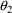
, and
,
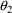
, and
 are not all identifiable.) The physiological variable SIZE
may be used also with models for the typical values of other
PK parameters, e.g. metabolic clearance
are not all identifiable.) The physiological variable SIZE
may be used also with models for the typical values of other
PK parameters, e.g. metabolic clearance
For another example, glomerular filtration rate may be modeled
where AGE and SCR are an individual’s age and serum creatinine measurement. Then the typical value of renal clearance may be given by
The typical value of total clearance could be given by
The model for
 in terms of physiological variables is often linear in the
in terms of physiological variables is often linear in the
 ’s, as these examples illustrate. The model for
’s, as these examples illustrate. The model for
 in terms of x is often nonlinear in the
in terms of x is often nonlinear in the
 ’s, as indicated by (3) and (4) taken together.
’s, as indicated by (3) and (4) taken together.
The discussion and examples in section B.1 apply when, for each individual, each concomitant variable has a single value. Essentially, the PK routine is called, and the typical value of a PK parameter is computed, using a model such as any of those described in section B.1. However, to a limited extent PREDPP also accommodates the case where the value x of the vector of concomitant variables varies within an individual over time. Again, the discussion and examples in section B.1 can apply, as is now described.
Note that a model for the
typical value of a PK parameter simply produces different
typical values as x varies. Similarly, as x varies, the
subject-specific value of the parameter (for a fixed value
of
 ; see the discussion in section D) also varies. The value x
can vary from event record to event record (within an
individual record), and if the typical/subject-specific
value is computed with each event record, this allows the
variation in the typical/subject-specific value, across the
time domain during which observations are obtained, to be
taken into account, at least to within the time-resolution
given by the event times. To properly account for this
variation, a fine degree of time-resolution may be required.
Event records can be included in the individual record whose
sole purpose is to give values x at times of greater
resolution (see section V.B). If though, the concomitant
variables are only measured at certain discrete times,
interpolated values may need to be obtained for these
"extra" event records. While the interpolation per
se can be implemented within the NONMEM run (see section
VI.A), the user must still include extra event records in
the data set which contain the extra times. Also, PREDPP
itself does not compute the interpolated values, rather this
computation must be completely specified with user-supplied
FORTRAN code.
; see the discussion in section D) also varies. The value x
can vary from event record to event record (within an
individual record), and if the typical/subject-specific
value is computed with each event record, this allows the
variation in the typical/subject-specific value, across the
time domain during which observations are obtained, to be
taken into account, at least to within the time-resolution
given by the event times. To properly account for this
variation, a fine degree of time-resolution may be required.
Event records can be included in the individual record whose
sole purpose is to give values x at times of greater
resolution (see section V.B). If though, the concomitant
variables are only measured at certain discrete times,
interpolated values may need to be obtained for these
"extra" event records. While the interpolation per
se can be implemented within the NONMEM run (see section
VI.A), the user must still include extra event records in
the data set which contain the extra times. Also, PREDPP
itself does not compute the interpolated values, rather this
computation must be completely specified with user-supplied
FORTRAN code.
The typical/subject-specific value can indeed be computed with each event record, or with a more limited set of event records if desired (see section H). It can even be computed with each event record and at certain additional times, allowing for just a bit more flexibility in obtaining interpolated values of the concomitant variables (see below and section H). How these computed values are used in the kinetic computations is outlined next.
The time domain is discretized at the event times, and at some other points as well. These times are called state times
and the time interval between two successive state times is called a state-time interval
The pharmacokinetic system, i.e. the state vector of compartment amounts, is advanced from one state time to the next, and the (typical and subject-specific) values of the PK parameters are assumed to be constant over each state-time interval (possibly different constants over each interval). As the system is advanced, the routine PK is called at various state times. When the system is advanced over the state-time interval , the PK routine will have already been called in order to obtain the typical/subject-specific values of all the PK parameters governing the kinetics over the interval. A more precise description is given next.
A state time may be an event time, but there are other discrete times to which the system must be advanced, which are not (formally) event times. For example, an infusion may terminate at some time t, but while an infusion termination is not signalled by an event record, the system state changes in a discontinuous way at t. If time t is also an event time, it is only coincidental. Another example of a nonevent state time occurs when an absorption lag time is computed with a dose; the time the dose actually enters the system is a state time. This state time - indeed, any nonevent state time when either a bolus dose actually enters the system or when an infusion actually begins - is called a nonevent dose time
Of course, if the lag time is computed to be 0, then just coincidentally, the nonevent dose time is an event time, i.e. the time the dose was given. With any state time t there are associated one, or possibly two, particular event records. The first record is the one with event time t if t is itself an event time, or it is the first record whose event time follows t if t is not an event time. It is called the argument record associated with t, for a reason described in section C. If t is a nonevent dose time, then the event record describing the dose is also associated with t.
Certain PK parameters such as
clearance act continuously over state-time intervals
in the sense that drug amount in the system varies over such
an interval
 according to a pharmacokinetic model which depends on values
of these parameters at each instant in the interval.
However, PREDPP assumes that the (typical and
subject-specific) values of continuously acting PK
parameters are constant over the interval, and it obtains
these constant values from a call to PK where the argument
record associated with
according to a pharmacokinetic model which depends on values
of these parameters at each instant in the interval.
However, PREDPP assumes that the (typical and
subject-specific) values of continuously acting PK
parameters are constant over the interval, and it obtains
these constant values from a call to PK where the argument
record associated with
 is made available to the routine. The values of the
concomitant variables on this argument record determine the
constant values of the PK parameters holding over the
interval (unless the PK routine is written in such a way as
to make use of information made available to it from
previous calls).
is made available to the routine. The values of the
concomitant variables on this argument record determine the
constant values of the PK parameters holding over the
interval (unless the PK routine is written in such a way as
to make use of information made available to it from
previous calls).
This is sometimes described as
"LOCB Last Observation Feed Backwards" rather than
"LOCF Last Observation Feed Forwards". Values
computed by PK for the record with TIME=
 are used during the advance from
are used during the advance from
 to
to
 . If the values on the record with
. If the values on the record with
 were used, the values (other than TIME) recorded on the last
record in the data set would never be seen by PK, and could
not enter into the model. Linear interpolation could not be
carried out properly. As it is, the first data record is
always seen by PK (because there is always a call to PK with
the first data record of the individual record), and all
subsequent data records are seen prior to the advance to
those records.
were used, the values (other than TIME) recorded on the last
record in the data set would never be seen by PK, and could
not enter into the model. Linear interpolation could not be
carried out properly. As it is, the first data record is
always seen by PK (because there is always a call to PK with
the first data record of the individual record), and all
subsequent data records are seen prior to the advance to
those records.
Other PK parameters such as a bioavailability fraction (see section F.2) act discretely at state times in the sense that drug amounts in the system vary from one state time to the next according to a pharmacokinetic model that depends on values of these parameters only at these times, although values of particular parameters are only needed at certain state times. In the case of a bioavailability fraction, for example (see section F.2), the model depends on the value of this parameter only at state times when doses enter (or start to enter) the system. For a nonevent dose time t, PREDPP normally obtains the values of these parameters from a call to PK with the argument record associated with t, and if requested, the event record describing the dose is also made available with this call. Information from one or both records may be needed to compute the values of a PK parameter such as bioavailability. For any other state time t, including all event times, PREDPP obtains the values from a call to PK with the argument record associated with t.
As concomitant values change across time, so does the information on event records, and then so does the output of the PK routine, i.e. the values of the kinetic parameters.
PK is a required user-supplied subroutine. Its first several statements, i.e. its preface
must be
SUBROUTINE PK(ICALL,IDEF,THETA,IREV,EVTREC,NVNT,INDXS,IRGG,GG,NETAS) USE SIZES, ONLY: DPSIZE,ISIZE USE PRDIMS, ONLY: GPKD IMPLICIT REAL(KIND=DPSIZE) (A-Z) REAL(KIND=DPSIZE) :: EVTREC INTEGER(KIND=ISIZE) :: ICALL,IDEF,IREV,NVNT,INDXS,IRGG,NETAS DIMENSION :: IDEF(7,*),THETA(*),EVTREC(IREV,*),INDXS(*),GG(IRGG,GPKD+1,*)
This is the NONMEM 7 version. The preface was different with earlier versions of NONMEM. Global variable GPKD is needed because GG is sized according to the number of etas in the problem. GG may be declared as a 2 dimensional array GG(IRGG,*) when the Laplacian method is not used. For simplicity, it will be used that way in the examples below, although, when GG is declared 3 dimensional, the third subscript should be understood to be ",1"; E.g., GG(M,1) should be understood to be GG(M,1,1). However, when the Laplacian method might be used later with the given data set, it is a good idea to develop a PK code that allows this.
When PK is called by PREDPP, it
is passed values for the vector
 in THETA. It is also passed a complete event record in
EVTREC. Specifically, EVTREC(I,J) contains the Jth data item
of the Ith data record of the event record. This record is
the argument record defined in the previous section. Its
name refers to the fact that it is passed to PK as a
subroutine argument, EVTREC. (As mentioned in section B.2,
there are circumstances where a dose record, different from
the argument record, may also be needed by the PK routine. A
description of how PK has access to this record is given in
section I.) PK is also passed the total number N of data
records comprising the event record. Typically N=1, and so
the first subscript of EVTREC will always be 1; however, see
chapter II. With NM-TRAN, the CONT data item cannot be used
and N is 1.
in THETA. It is also passed a complete event record in
EVTREC. Specifically, EVTREC(I,J) contains the Jth data item
of the Ith data record of the event record. This record is
the argument record defined in the previous section. Its
name refers to the fact that it is passed to PK as a
subroutine argument, EVTREC. (As mentioned in section B.2,
there are circumstances where a dose record, different from
the argument record, may also be needed by the PK routine. A
description of how PK has access to this record is given in
section I.) PK is also passed the total number N of data
records comprising the event record. Typically N=1, and so
the first subscript of EVTREC will always be 1; however, see
chapter II. With NM-TRAN, the CONT data item cannot be used
and N is 1.
With these arguments the typical
values of the PK parameters may be computed. E.g. Let
EVTREC(1,1) and EVTREC(1,2) be height and weight,
respectively. If
 is given by (4) (of the previous section), then one might
use the code
is given by (4) (of the previous section), then one might
use the code
SIZE = EVTREC(1,1)**THETA(2)*EVTREC(1,2)**THETA(3) TVVD = THETA(1)*SIZE
This typical value of Vd will
apply over any state-time interval
where
 is a state time with which the argument record is
associated. When using the first-order method of estimation,
this typical value must be communicated to PREDPP, as must
the typical values of all the PK parameters; the way to do
this is discussed shortly. (When conditional estimates are
used, or simulation with population data is implemented,
subject-specific values must be communicated instead; see
section E.)
is a state time with which the argument record is
associated. When using the first-order method of estimation,
this typical value must be communicated to PREDPP, as must
the typical values of all the PK parameters; the way to do
this is discussed shortly. (When conditional estimates are
used, or simulation with population data is implemented,
subject-specific values must be communicated instead; see
section E.)
The one-dimensional array,
INDXS, functions in a way similar to that of a larger array
of the same name, described in Guide I, section
C.4.1.†
----------
† The INDXS array
cannot be used with NM-TRAN abbreviated code.
----------
In fact, INDXS is comprised of elements 12-50 of the larger array. The user places integers into that array, using the NONMEM control record INDEX (NM-TRAN control record $INDEX). These integers are then available to PREDPP and therefore to PK. The code.
I11 = INDXS(1) I12 = INDXS(2) I13 = INDXS(3) SIZE = EVTREC(I11,I12)**THETA(2)*EVTREC(I11,I13)**THETA(3) TVVD = THETA(1)*SIZE
has the same effect as has the previous code when INDXS(1), INDXS(2), and INDXS(3) are 1, 1, and 2, respectively. However, this code, unlike the previous code, frees the user from having to decide at the time PK is coded how the data items are going to be organized in the event record. PREDPP itself makes use of certain integers it requires be placed in elements 1-11 of the larger INDXS array (see section V.A), but it insures that INDXS(1), ..., INDXS(39), as made available to PK, refer to elements 12-50 of the larger array. So, the values 1, 1 and 2 of the example actually would be placed in elements 12-14 of that array.
With every translator routine, TRANS, there is associated a particular list of basic PK parameters whose values must be computed by PK, and a numbering of these parameters; see section VII.C. The parameters are numbered sequentially beginning with the number 1, but numbers may be skipped, e.g. 1,3,4,7. When the first-order method of estimation is used, the typical value of the Mth parameter should be placed in GG(M,1). So when, say, volume of distribution is numbered 2, before exiting, PK should execute code like this:
GG(2,1) = TVVD
The argument ICALL functions
similarly to the ICALL argument described in Guide I,
section C.4.2. It has 5 possible values when PK is
called.†
----------
† For a complete
list of ICALL values and called routines, see Chapter VI.
----------
The value 1 signals to PK that the routine is being called for the first time in the NONMEM problem. At such a time PK must store certain information in array IDEF, but optionally, store certain information in GG. Here we discuss the matter concerning GG; the use of IDEF is discussed in sections G and H.
The value 2 signals to PK that the routine is being called in a regular fashion for data analytic purposes and that values of PK parameters are to be stored in the first column of GG. These can be typical values, as is described in this section, or they can be subject-specific values (see sections D and E). For data analytic purposes, however, it is not sufficient to compute values of PK parameters. Certain partial derivatives are also needed; see sections D and E.
The value 4 signals to PK that the routine is being called in a regular fashion for data simulation purposes. If the data are population data, (simulated) subject-specific values of PK parameters are to be stored in the first column of GG; see section E.2. If however, the data are all from a single subject, so that the subject’s specific values are synonomous with the typical values, then at ICALL=4 typical values are stored in this column.
The value 5 signals to PK that the routine is being called in a regular fashion when expectations are being computed; multiple calls occur. Expectation blocks are described in the help Guide VIII. No eta derivatives need be computed.
If there is abbreviated code in the $PK block that tests for ICALL=0, ICALL=1, or ICALL=3, this code is moved by NM-TRAN to the INFN routine as if it had been coded explicitly as part of an $INFN block. Such code is called $PK-INFN code. The initialization code described in the next paragraph is generated in FSUBS by NM-TRAN regardless of the presence of $PK-INFN code.
At ICALL=1, 0’s and
1’s should be stored in the first column of GG.
Usually, a 0 should be stored in GG(M,1), indicating that
the user acknowledges that when ICALL=2 (or 4), the typical
(or subject-specific) value of the Mth PK parameter will be
placed in GG(M,1). When ICALL=1, the value passed to PK in
GG(M,1) is 0; so if the user stores nothing in GG(M,1), he
is achieving the same effect. If, though, a 1 is stored in
GG(M,1), the user is specifying that when ICALL=2 (or 4),
the (natural based) logarithm of the typical (or
subject-specific) value of the Mth PK parameter will be
placed in GG(M,1).†
----------
† The logarithms of
PK parameters cannot be modelled in this way with NM-TRAN.
----------
PREDPP will exponentiate this logarithm so to obtain the typical (or subject-specific) value of the PK parameter. If this option is chosen, then at ICALL=2 the code for GG(2,1) might look like this:
ATVVD = LOG(THETA(1)*SIZE) GG(2,1) = ATVVD
which would be appropriate for model (4) and which would have the same effect as the above code, except that it would execute more slowly (because an extra logarithm and exponentiation are involved). Alternatively, the code for GG(2,1) might look like this:
ATVVD = LOG(THETA(1))+THETA(2)*LOG(EVTREC(2,1)) +THETA(3)*LOG(EVTREC(2,2))
GG(2,1) = ATVVD
which would also have the same effect as the above code, except that it would execute about as fast (because A**B is computed as EXP(B*LOG(A)).
The argument NETAS equals the
total number of user-defined
 variables. The user may possibly find this argument useful,
particularly for implementing models for subject-specific
values of PK parameters.
variables. The user may possibly find this argument useful,
particularly for implementing models for subject-specific
values of PK parameters.
A model for subject-specific PK parameter values is needed for population data analysis and for the simulation of population data. Models for typical PK parameter values are discussed in section B, and their implementation in PREDPP is discussed in section C. If all the data come from the same subject, then the subject’s specific value of a PK parameter is simply his typical value, the discussions in sections B and C suffice, and the discussion in this section D is not applicable.
The typical value is to be associated with the subpopulation of individuals sharing the same set, x, of values for the concomitant variables. Any given individual of this subpopulation, though, has his own specific value of the PK parameter. Unexplainable interindividual variability refers to differences that exist between these subject-specific values. In this section models for subject-specific PK parameter values are discussed. Such a model gives the relationship between (a) a subject’s specific value of a PK parameter, and (b) the typical value for that (type of) subject and the random interindividual effects accounting for the difference between the subject’s specific value and his typical value. Also, as will be seen, with such a model concomitant variables may have an effect on (a) other than through the typical value.
Clearly, by accounting for the difference between the subject’s specific value and his typical value, across all subjects in the subpopulation, one also accounts for unexplainable interindividual variability. By doing so with random effects, this variability is modeled as arising randomly.
The simplest type model for an individual’s specific value of a PK parameter P is
where
 is the typical value of P, but more specifically, the mean P
in the subpopulation of individuals whose concomitant values
are those given by x, and where
is the realization (i.e. value) of a random variable
is the typical value of P, but more specifically, the mean P
in the subpopulation of individuals whose concomitant values
are those given by x, and where
is the realization (i.e. value) of a random variable
 with mean 0 and variance
with mean 0 and variance
 . The variable
. The variable
 is a random effect accounting for the unexplained
interindividual variability in P throughout the
subpopulation; its realization
is a random effect accounting for the unexplained
interindividual variability in P throughout the
subpopulation; its realization
 changes from individual to individual. We shall henceforth
omit the asterisk from a PK parameter, P, when denoting a
subject-specific value of P, and also henceforth omit the
asterisk from a random variable such as
changes from individual to individual. We shall henceforth
omit the asterisk from a PK parameter, P, when denoting a
subject-specific value of P, and also henceforth omit the
asterisk from a random variable such as
 when denoting a subject-specific realization of the
variable. Due to the context in which these symbols will be
used little problem should result from this ambiguity in
notation. Consequently, (9) may be rewritten
when denoting a subject-specific realization of the
variable. Due to the context in which these symbols will be
used little problem should result from this ambiguity in
notation. Consequently, (9) may be rewritten
If
 is given in turn by (2), then we could write
is given in turn by (2), then we could write
but for the purposes of what
follows, it shall not be necessary to expand
in terms of elements of x. However, we next describe how
 may in turn be further modelled in terms of the elements of
x, and so these elements thus may appear explicitly in the
final model for P.
may in turn be further modelled in terms of the elements of
x, and so these elements thus may appear explicitly in the
final model for P.
Actually,
may not be entirely unexplainable. For example, it might be
that there are two groups of individuals, identifiable by
some dichotomous (0-1) valued concomitant variable, Z, say,
and that metabolic clearance may vary more widely in one
group than in the other, all other values of the concomitant
variables being equal. In other words, for some random
variable
 with mean 0 and variance
,
with mean 0 and variance
,

Written differently,
So
 in (10) has been expressed in terms of yet another random
variable
in (10) has been expressed in terms of yet another random
variable
 . While
. While
 has homogeneous variance,
has homogeneous variance,
 does not; the variance of
does not; the variance of
 is
if Z=0 and
if Z=1. Note that parameters like
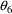
may enter the model for
and may be estimated.
is
if Z=0 and
if Z=1. Note that parameters like
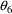
may enter the model for
and may be estimated.
For the purposes of using NONMEM, the user should become familiar with expressing the model for P in terms of random variables with means 0 and homogeneous variances. So for example, (12) is preferred to
where
 is the variable with inhomogeneous variance considered
above.
is the variable with inhomogeneous variance considered
above.
Another simple model for P is
where the mean and variance of
 are 0 and
are 0 and
 , respectively. Here
, respectively. Here
 is the coefficient of variation of P in the subpopulation.
Instead of
is the coefficient of variation of P in the subpopulation.
Instead of
 having homogeneous variance
having homogeneous variance
 , perhaps
, as above. In any case, under (13),
, perhaps
, as above. In any case, under (13),
 again can depend on x, if only through
again can depend on x, if only through
 .
.
The random variables (with
homogeneous variance) occuring in a model for P may be
regarded as having a population meaning beyond the
particular subpopulation corresponding to x. They are
independent of x. With every individual sampled from the
larger population, there are associated with the individual
(i) a particular set of values for the concomitant variables
(some of which, like a dose, may be controlled by the
investigator), and (ii) a particular set of realizations of
the random variables. The variances of the random variables
quantify random interindividual variability in P in the
larger population, after the values of the concomitant
variables are taken into account. We think of the random
variables (as we do with the concomitant variables) as
describing different population effects (although, unlike
the concomitant variables, these effects are unobservable),
and we think of their variances as a kind of population
parameter. These variances may be estimated. The random
effects confer the characteristics of a random variable to P
itself. With model (10), the standard deviation of P is
constant in the population if
 has homogeneous variance. With model (13), the standard
deviation of P in the population is proportional to
.
has homogeneous variance. With model (13), the standard
deviation of P in the population is proportional to
.
The mean and variance of a
random variable are suitable measures of centrality and
dispersion, respectively, if the distribution of the
variable is sufficiently Gaussian-like. Often the
distribution of a PK parameter P (for fixed x) is
significantly right-skewed in the population being sampled,
and then the use of models like (10) and (13), and the
quantification of random interindividual variability in
terms of the variances of the involved
 variables, are not very appropriate. A more appropriate
model might be
variables, are not very appropriate. A more appropriate
model might be
where the mean and variance of
 are 0 and
are 0 and
 , respectively. This model is, of course, equivalent to
, respectively. This model is, of course, equivalent to
If the distribution of
 is Gaussian, then the distribution of P is lognormal. In any
case,
is the geometric mean of P, and
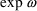
is the geometric standard deviation of P. When
is Gaussian, then the distribution of P is lognormal. In any
case,
is the geometric mean of P, and
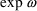
is the geometric standard deviation of P. When
 is sufficiently small, and
is sufficiently small, and
 is Gaussian distributed, the distribution of P itself is
Gaussian-like, and model (13) is not too bad an
approximation to model (14). When
is Gaussian distributed, the distribution of P itself is
Gaussian-like, and model (13) is not too bad an
approximation to model (14). When
 is sufficiently small, the mean and coefficient of variation
of P are approximately
and
is sufficiently small, the mean and coefficient of variation
of P are approximately
and
 , respectively.
, respectively.
If metabolic clearance and renal clearance are modeled by
then total clearance might be given by
This illustrates that a PK
parameter might be modeled in terms of more than one
 type variable. Also note that (18) cannot be written
equivalently in terms of additive
type variable. Also note that (18) cannot be written
equivalently in terms of additive
 ’s, as in (15), since the logarithm does not
distribute over a sum.
’s, as in (15), since the logarithm does not
distribute over a sum.
In examples (10), (13), and
(14),
 is obtainable from the model for the subject-specific value
of P by setting
is obtainable from the model for the subject-specific value
of P by setting
 to its mean value, 0 (the typical value of
to its mean value, 0 (the typical value of
 ). By analogy, a typical value for total clearance can be
obtained from (18) by setting both
). By analogy, a typical value for total clearance can be
obtained from (18) by setting both
 and
to 0, yielding
and
to 0, yielding
(see (8) of section B.1). However, this typical value is neither a mean nor geometric mean. A model for a subject-specific value of a PK parameter has been described in this section as being dependent on a model for a typical value. In general though, a model for a typical value can always be obtained from a model for a subject-specific value in the way just illustrated. In fact, when NONMEM/PREDPP needs a typical value, but a model for subject-specific values has been coded (see section E), the program will obtain the typical value in this way.
The reader should recognize that
the
 variables discussed above are the same type of
variables discussed above are the same type of
 variables discussed in Guide I. Two such random effects can
correlate across individuals, and examples of this and the
way one can communicate this to NONMEM and obtain estimates
of covariability are described in that document.
variables discussed in Guide I. Two such random effects can
correlate across individuals, and examples of this and the
way one can communicate this to NONMEM and obtain estimates
of covariability are described in that document.
Conditional estimates of the
 ’s used in the model for a parameter P are obtained by
searching for those values for the
’s used in the model for a parameter P are obtained by
searching for those values for the
 ’s that minimize a certain objective function. Values
are tried which vary somewhat independently of
’s that minimize a certain objective function. Values
are tried which vary somewhat independently of
 . So it is possible that values of P result that are outside
the meaningful range of the parameter and at which
meaningful kinetic predictions are not computable. For
example, if P is given by (13), large enough negative values
of
. So it is possible that values of P result that are outside
the meaningful range of the parameter and at which
meaningful kinetic predictions are not computable. For
example, if P is given by (13), large enough negative values
of
 may be tried which produce negative values of P, whereas P
could be the volume of distibution, for which negative
values are meaningless. For this reason, and because of the
possiblility that the distibution of P might be
significantly right-skewed, a model like (14) is often
preferable when conditional estimates are computed.
(However, it may not be actually necessary to use (14), and
the more so P is symmetrically distributed, the less of a
problem it is to use (13).)
may be tried which produce negative values of P, whereas P
could be the volume of distibution, for which negative
values are meaningless. For this reason, and because of the
possiblility that the distibution of P might be
significantly right-skewed, a model like (14) is often
preferable when conditional estimates are computed.
(However, it may not be actually necessary to use (14), and
the more so P is symmetrically distributed, the less of a
problem it is to use (13).)
Estimates of the
 ’s do not result from using the first-order estimation
method. The only value of an
’s do not result from using the first-order estimation
method. The only value of an
 variable used with this method is 0. As long as
variable used with this method is 0. As long as
 is a meaningful value of P, the kinetic predictions are
computable. Therefore, from this point of view neither (13)
nor (14) is preferable when the first-order method is used.
Indeed, with first-order estimation models (13) and (14)
cannot be distinguished; see discussion below. Conceptually
though,
is a meaningful value of P, the kinetic predictions are
computable. Therefore, from this point of view neither (13)
nor (14) is preferable when the first-order method is used.
Indeed, with first-order estimation models (13) and (14)
cannot be distinguished; see discussion below. Conceptually
though,
 varies between
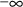
and
, even if the value 0 is the only value used in the
computation. So, strictly speaking, model (13) can at best
only be an approximate statistical model for P.
varies between
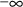
and
, even if the value 0 is the only value used in the
computation. So, strictly speaking, model (13) can at best
only be an approximate statistical model for P.
In fact, PREDPP checks that
computed values of certain PK parameters are
meaningful, e.g. that certain rate constants are positive,
and if a value is not meaningful, PREDPP avoids the
computation of kinetic predictions with this value and
returns a PRED error-recovery code to NONMEM so that NONMEM
understands that the "guilty" values of the
 ’s cannot serve as estimates; see section K.1. (A
check can be included in PK itself, and an immediate return
to NONMEM with a PRED error-recovery code can be executed;
see section K.2). Often, this allows a model such as (13) to
be used when conditional estimates are computed; meaningful
kinetic predictions can always be computed and meaningful
estimates of the
’s cannot serve as estimates; see section K.1. (A
check can be included in PK itself, and an immediate return
to NONMEM with a PRED error-recovery code can be executed;
see section K.2). Often, this allows a model such as (13) to
be used when conditional estimates are computed; meaningful
kinetic predictions can always be computed and meaningful
estimates of the
 ’s can be obtained. Nonetheless, when the distribution
of P is significantly right-skewed in the population, use of
model (14) can produce a better description of random
interindividual variability in P, and this may not be
detected when (13) is the only model tried and inherent
problems with using (13) are masked.
’s can be obtained. Nonetheless, when the distribution
of P is significantly right-skewed in the population, use of
model (14) can produce a better description of random
interindividual variability in P, and this may not be
detected when (13) is the only model tried and inherent
problems with using (13) are masked.
When using a conditional estimation method, it is also possible for values of several parameters to result which are not meaningfully related. For example, suppose the kinetics are linear, one compartment with first-order absorption (ADVAN2), and that the elimination and absorption rate constants and the volume of distribution are given by
(Here V is needed as a scaling
parameter (see section F), not for the computation of
compartment amounts.) Then values of
 and
and
 may be tried which produce values
, whereas for the drug in question, suppose only
is meaningful. With these values of
may be tried which produce values
, whereas for the drug in question, suppose only
is meaningful. With these values of
 and
and
 meaningful kinetic predictions can be computed, but only if
the roles of ke and ka are reversed in the kinetic model.
However, reversing their roles entails reversing the roles
of
and
, and also of
meaningful kinetic predictions can be computed, but only if
the roles of ke and ka are reversed in the kinetic model.
However, reversing their roles entails reversing the roles
of
and
, and also of
 and
and
 , and therefore, also of
and
, and therefore, also of
and
 (as well as changing the meanings of
,
(as well as changing the meanings of
,
 , and
). The quantities
,
,
, and
). The quantities
,
,
 ,
,
,
,
,
,
 are population quantities, applying to all
individuals (with given x), and fixed in value for the
purpose of estimating the
are population quantities, applying to all
individuals (with given x), and fixed in value for the
purpose of estimating the
 ’s. Changing their meanings, so that the parameter
values of ke, ka, and V are meaningful for one individual,
entails changing their meanings as they apply to all
individuals. Under such a reinterpretation of these
population quantities, and with their given values, it is
now possible that values of the
’s. Changing their meanings, so that the parameter
values of ke, ka, and V are meaningful for one individual,
entails changing their meanings as they apply to all
individuals. Under such a reinterpretation of these
population quantities, and with their given values, it is
now possible that values of the
 ’s for yet another individual might be tried which
give rise to nonmeaningful values ke, ka, and V for him. So
a problem remains. The well-known parameter
"flip-flop" phenomenon is not handled as easily in
population PK data analysis as it is in single-subject PK
data analysis.
’s for yet another individual might be tried which
give rise to nonmeaningful values ke, ka, and V for him. So
a problem remains. The well-known parameter
"flip-flop" phenomenon is not handled as easily in
population PK data analysis as it is in single-subject PK
data analysis.
When ADVAN2 is used, the user
can check in PK whether
 , and if so, can force PREDPP to avoid the computation of
kinetic predictions and return a PRED error-recovery code to
NONMEM, so that NONMEM understands that the
"guilty" values of the
, and if so, can force PREDPP to avoid the computation of
kinetic predictions and return a PRED error-recovery code to
NONMEM, so that NONMEM understands that the
"guilty" values of the
 ’s cannot serve as estimates (see section K.2).
However again, a better solution is to try another type of
model involving
’s cannot serve as estimates (see section K.2).
However again, a better solution is to try another type of
model involving
 ’s, e.g.
’s, e.g.
where constraints on
 ’s are used to ensure that
. This model explicitly recognizes that
in the population. Therefore, it also implies that ke and ka
cannot be statistically independent (even if
’s are used to ensure that
. This model explicitly recognizes that
in the population. Therefore, it also implies that ke and ka
cannot be statistically independent (even if
 and
and
 are assumed to be independent). Model (20), with or without
the assumption that
are assumed to be independent). Model (20), with or without
the assumption that
 and
and
 are independent, is at best only an approximate statistical
model for ke and ka.
are independent, is at best only an approximate statistical
model for ke and ka.
Generally speaking, the PK routine specifies a subject-specific model for (all) the PK parameters. It does this in different ways, depending on whether PREDPP is being called for the purposes of data analysis, or data simulation, or both, and depending on the estimation method being used. For the purposes of data simulation, the specification uses the type of mathematical expressions for subject-specific values shown above.
For the purposes of data
analysis, the specification can entail expressions for
subject-specific values, such as those shown above, or
instead, it can entail expressions for typical values. In
either case, it also always entails expressions for a set of
first partial derivatives of the model for the
subject-specific values of the PK parameters with respect to
the
 ’s. For the purpose of data analysis using the
Laplacian method, the specification further entails
expressions for a set of second-partial derivatives. The
matter of first-partial derivatives is addressed first.
’s. For the purpose of data analysis using the
Laplacian method, the specification further entails
expressions for a set of second-partial derivatives. The
matter of first-partial derivatives is addressed first.
The first-partial derivatives of
the model for the subject-specific values of the PK
parameters with respect to the
 ’s, as functions of the
’s, as functions of the
 ’s, are called the subject-specific first-partial
derivatives
’s, are called the subject-specific first-partial
derivatives
For (12)-(14) and (18) for example, the first-partials are
These types of expressions are
used whenever conditional estimates are computed. They are
also used when the first-order estimation method is used,
but then the first-partials must be evaluated at all
 ’s equal 0. These first-partial derivatives are called
the typical first-partial derivatives
’s equal 0. These first-partial derivatives are called
the typical first-partial derivatives
For the above examples these are
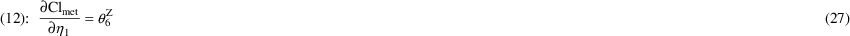
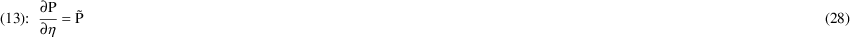
Note that the derivatives (28)
and (29) are identical. With the first-order estimation
method, the model for subject-specific values of the PK
parameters is fully defined by specifying the typical values
and the typical first-partial derivatives. Since the typical
values are the same under models (13) and (14), and since
the derivatives (28) and (29) are also the same, the
first-order estimation method can never distinguish between
models (13) and (14). That is, the same fit will result from
using either model. In effect, an assumption is being made
that the variance of
 in (14) is small, and that the mean and coefficient of
variation of P under model (14) are well approximated by
in (14) is small, and that the mean and coefficient of
variation of P under model (14) are well approximated by
 and
and
 , respectively. With the conditional estimation methods,
however, the model for subject-specific values of the PK
parameters is defined by specifying the subject-specific
values themselves, along with subject-specific partial
derivatives. Since expressions (13) and (14) differ for some
values of
, respectively. With the conditional estimation methods,
however, the model for subject-specific values of the PK
parameters is defined by specifying the subject-specific
values themselves, along with subject-specific partial
derivatives. Since expressions (13) and (14) differ for some
values of
 , the population conditional estimation methods can
distinguish between models (13) and (14) when the data allow
this.
, the population conditional estimation methods can
distinguish between models (13) and (14) when the data allow
this.
It should be emphasized that the
typical first-partial derivatives, despite their name and
the fact that to obtain them all
 ’s are set to zero, convey information about the model
for subject-specific values. They are rates of change of PK
parameters with respect to interindividual effects.
’s are set to zero, convey information about the model
for subject-specific values. They are rates of change of PK
parameters with respect to interindividual effects.
As noted in section C, the PK
routine allows a model to be defined for
, rather than for P. The derivatives of
 with respect to the involved
with respect to the involved
 ’s, rather than the derivatives of P itself, may be
specified. The subject-specific (and typical) first-partial
derivative of
’s, rather than the derivatives of P itself, may be
specified. The subject-specific (and typical) first-partial
derivative of
 from (15), for example, is
from (15), for example, is
PREDPP transforms to since it needs the latter.
Just as typical values can always be obtained from expressions for subject-specific values, so can typical first-partials.
Second-partial derivatives are
needed when the Laplacian estimation method is used. The
second-partial derivatives of the model for the
subject-specific values of the PK parameters with respect to
the
 ’s, as functions of the
’s, as functions of the
 ’s, are called the subject-specific second-partial
derivatives
’s, are called the subject-specific second-partial
derivatives
These often are simply 0. For the above examples these are
The subject-specific second-partial derivative of from (15) is
Second-partial derivatives of
the model for the subject-specific values of the PK
parameters with respect to the
 ’s, evaluated at all
’s, evaluated at all
 ’s equal to 0 (i.e. typical second-partial
derivatives) may, of course, also be considered, but they
are never needed in NONMEM computations.
’s equal to 0 (i.e. typical second-partial
derivatives) may, of course, also be considered, but they
are never needed in NONMEM computations.
For the purpose of data analysis
with population data, models for the subject-specific values
must be communicated to PREDPP. When the first-order
estimation method is used, this involves communicating the
typical values of the PK parameters (see section C), and
also the typical first-partial derivatives, the
implementation of which is discussed in section E.1. When a
conditional estimation method is used, or posthoc estimates
of
 ’s are desired, this involves communicating
subject-specific PK parameter values and subject-specific
first-partial derivatives. Implementation of the former is
discussed in section E.2, and implementation of the latter
is discussed in section E.3. Also the simulation of
population data uses subject-specific values of PK
parameters. The Laplacian method uses subject-specific
second-partial derivatives, and the implementation of these
is discussed in section E.4.
’s are desired, this involves communicating
subject-specific PK parameter values and subject-specific
first-partial derivatives. Implementation of the former is
discussed in section E.2, and implementation of the latter
is discussed in section E.3. Also the simulation of
population data uses subject-specific values of PK
parameters. The Laplacian method uses subject-specific
second-partial derivatives, and the implementation of these
is discussed in section E.4.
The first-order method can also
be used when subject-specific values and subject-specific
first-partial derivatives are communicated. Implementation
of this mode of communication is generally preferable for
the development of new PK codes, for although one may
intend to only use the first-order method, one might
actually end up needing to compute conditional estimates
(e.g. posthoc estimation of
 ’s).
’s).
When all the data come from a single subject, both subject-specific values and derivatives are irrelevant, and this section is not applicable. For the purpose of reading this section the reader should be familiar with section C.
If the first-order estimation
method is used, typical first-partial derivatives must be
computed (see section D). The
 ’s involved in the models for the subject-specific
values of the PK parameters are numbered according to the
enumeration of the initial estimates of their variances in
NONMEM (or NM-TRAN) control records. The derivative of the
Mth PK parameter with respect to
should be placed in GG(M,1+K). (The Mth PK parameter is
defined in section C.) So if (total) clearance is the lst PK
parameter and is given by (18), and if
and
are the 4th and 5th
’s involved in the models for the subject-specific
values of the PK parameters are numbered according to the
enumeration of the initial estimates of their variances in
NONMEM (or NM-TRAN) control records. The derivative of the
Mth PK parameter with respect to
should be placed in GG(M,1+K). (The Mth PK parameter is
defined in section C.) So if (total) clearance is the lst PK
parameter and is given by (18), and if
and
are the 4th and 5th
 variables, respectively, then one needs code like
variables, respectively, then one needs code like
GG(1,1) = TVCLMT+TVCLRN ...
GG(1,5) = TVCLMT GG(1,6) = TVCLRN
(see section D equations (19),(30),(31)).
All values GG(1,1+K),
 , should be 0. However, since whenever PK is called, the GG
array is initialized to zero immediately before the call,
the user need not explicitly store zeros in elements of
GG.
, should be 0. However, since whenever PK is called, the GG
array is initialized to zero immediately before the call,
the user need not explicitly store zeros in elements of
GG.
By storing a 1 in GG(M,1) at
ICALL=1, the user specifies that when ICALL=2, the typical
value of the logarithm of the Mth PK parameter will be
placed in GG(M,1) (see section C).†
----------
† The logarithms of
PK parameters cannot be modelled in this way with NM-TRAN.
----------
This signal also means that the
typical first derivative of the logarithm of the Mth PK
parameter with respect to
 will be placed in GG(M,K+1). To take an example, if
is the 2nd PK parameter, if
is given by (15), and if
will be placed in GG(M,K+1). To take an example, if
is the 2nd PK parameter, if
is given by (15), and if
 in (15) is the 1st
in (15) is the 1st
 variable, then one needs code like
variable, then one needs code like
GG(2,1) = ATVVD GG(2,2) = 1
See section C for examples of ATVVD. In this example when ICALL=1, one also needs GG(2,1)=1.
When ICALL=4, PK is being called during the Simulation Step, and then subject-specific values must be computed. When ICALL=2, PK is being called for the purpose of data analysis, and when conditional estimates are involved, then too, subject-specific values must be computed. When the first-order estimation method is used, it suffices to compute subject-specific values, since typical values can always be obtained from subject-specific computations (section D).
Subject-specific values are
stored in the first column of the GG array, as are typical
values when they are stored; see section C. However again,
since typical values can always be obtained from
subject-specific value computations, subject-specific values
may be computed and stored in the first column whenever both
types of values may be needed. As an example, when both
simulation and data analysis using the first-order
estimation method occur in the same run, subject-specific
values should be computed and stored. Or, when a run
involves posthoc estimation of
 ’s, subject-specific values should be computed and
stored. As a final example, when a run involves two
problems, one using the first-order method, and another
using a conditional method, subject-specific values should
be computed and stored.
’s, subject-specific values should be computed and
stored. As a final example, when a run involves two
problems, one using the first-order method, and another
using a conditional method, subject-specific values should
be computed and stored.
The subject-specific value of
the Mth parameter is stored in GG(M,1). So if (total)
clearance is the lst PK parameter and is given by (18), and
if
and
are the 4th and 5th
 variables, respectively, then one needs code like
variables, respectively, then one needs code like
USE NMPRD_REAL,ONLY: ETA ...
CALL GETETA (ETA)
...
GG(1,1) = TVCLMT*EXP(ETA(4))+TVCLRN*EXP(ETA(5))
ETA is a one-dimensional array
used to store values of
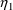
,
 ,
,
 , needed for the computation of subject-specific values of
the PK parameters.
, needed for the computation of subject-specific values of
the PK parameters.
See Section I.A for a discussion of module NMPRD_REAL.
See Section K.2 for a discussion of GETETA and IQUIT. When
ICALL=4, the values of
 ,
,
 ,
are obtained by a call to the NONMEM utility routine SIMETA.
An example of the use of SIMETA is given in section L.1.
When ICALL=2, these values are obtained by a call to the
NONMEM utility routine GETETA.
,
are obtained by a call to the NONMEM utility routine SIMETA.
An example of the use of SIMETA is given in section L.1.
When ICALL=2, these values are obtained by a call to the
NONMEM utility routine GETETA.
If the NONMEM run is only for
the purpose of simulation, a simple call to SIMETA at
ICALL=4, preceding the first reference to ETA in an
executable statement, suffices to obtain the
 values. If the NONMEM run does not involve simulation, a
simple call to GETETA at ICALL=2, preceding the first
reference to ETA in an executable statement, suffices to
obtain the
values. If the NONMEM run does not involve simulation, a
simple call to GETETA at ICALL=2, preceding the first
reference to ETA in an executable statement, suffices to
obtain the
 values, as in the above example. However, a run could entail
calls to PK with values of ICALL=2 and 4. Or, the user might
prefer that PK be coded to allow such a possiblity in a
future run using the PK routine. In this case the following
type of code can be written.
values, as in the above example. However, a run could entail
calls to PK with values of ICALL=2 and 4. Or, the user might
prefer that PK be coded to allow such a possiblity in a
future run using the PK routine. In this case the following
type of code can be written.
IF (ICALL.EQ.4) CALL SIMETA (ETA) IF (ICALL.EQ.2) CALL GETETA (ETA) ...
GG(1,1) = TVCLMT*EXP(ETA(4))+TVCLRN*EXP(ETA(5))
Lastly, GETETA must always be initialized at ICALL=1. This involves simply calling GETETA at ICALL=1. So, the code actually might look like:
IF (ICALL.EQ.1) THEN ... CALL GETETA (ETA) ... RETURN
ENDIF
...
IF (ICALL.EQ.4) CALL SIMETA (ETA) IF (ICALL.EQ.2) CALL
GETETA (ETA)
...
GG(1,1) = TVCLMT*EXP(ETA(4))+TVCLRN*EXP(ETA(5))
The initialization call does not
result in values of
 ’s being stored in ETA. Only calls to GETETA at
ICALL=2 or 4 result in
’s being stored in ETA. Only calls to GETETA at
ICALL=2 or 4 result in
 ’s being stored. Often initialization of GETETA is not
the only task that is undertaken at ICALL=1; see sections G
and H.
’s being stored. Often initialization of GETETA is not
the only task that is undertaken at ICALL=1; see sections G
and H.
As stated earlier in this section, when the first-order method is used, and when the only values of PK parameters that are needed are typical values, expressions for subject-specific values may be coded instead. When the first-order method is used, GETETA stores zeros in ETA, and then the subject-specific values become the required typical values.
By storing a 1 in GG(M,1) at
ICALL=1, the user specifies that when ICALL=2 or 4, the
subject-specific value of the logarithm of the Mth PK
parameter will be placed in GG(M,1) (see section C).†
----------
† The logarithms of
PK parameters cannot be modelled in this way with NM-TRAN.
----------
Something further about
simulation: By default, as long as PK is being called with
an event record from the same individual record, each time
SIMETA is called, the values
 ,
,
 ,
,
 stored in ETA remain the same; there is only one set of
values obtained for the individual. However, the simulation
can be done in such a way that the values change each time
SIMETA is called (see Guide IV, section III.B.13). Then only
the first time PK itself is called with an event record of a
given individual record should PK call SIMETA (see section H
for a discussion about the sequence of calls to PK). This
assures that there is only one set of values obtained for
the individual, as in the default situation. Unlike that
situation, though, during this first call to PK, multiple
calls to SIMETA might occur. So for example, simulated
values of
stored in ETA remain the same; there is only one set of
values obtained for the individual. However, the simulation
can be done in such a way that the values change each time
SIMETA is called (see Guide IV, section III.B.13). Then only
the first time PK itself is called with an event record of a
given individual record should PK call SIMETA (see section H
for a discussion about the sequence of calls to PK). This
assures that there is only one set of values obtained for
the individual, as in the default situation. Unlike that
situation, though, during this first call to PK, multiple
calls to SIMETA might occur. So for example, simulated
values of
 , obtained from multiple calls to SIMETA and such that
, can be rejected until a value
is obtained, i.e. the distribution on
, obtained from multiple calls to SIMETA and such that
, can be rejected until a value
is obtained, i.e. the distribution on
 can be truncated. The code might look like this:
can be truncated. The code might look like this:
IF (ICALL.EQ.1) THEN ... CALL GETETA (ETA) ... RETURN
ENDIF
...
IF (ICALL.EQ.4) THEN
IF (NEWIND.NE.2) THEN
5 CALL SIMETA (ETA)
IF (ABS(ETA(1)).GE.2.) GO TO 5
ENDIF
ENDIF IF (ICALL.EQ.2) CALL GETETA (ETA)
...
GG(1,1) = TVCLMT*EXP(ETA(4))+TVCLRN*EXP(ETA(5))
The variable NEWIND allows PK to know when it is being called for the first time with an event record of a given individual record (i.e. NEWIND not equal to 2); see section I.
For the purpose of data
analysis, routine PK is called with ICALL=2, at which time
derivatives must be computed. If a conditional estimation
method is used or posthoc estimates of the
 ’s are desired, subject-specific first-partial
derivatives must be computed (see section D). If the
Laplacian method is used, subject-specific second-partial
derivatives must also be computed; see section E.4.
’s are desired, subject-specific first-partial
derivatives must be computed (see section D). If the
Laplacian method is used, subject-specific second-partial
derivatives must also be computed; see section E.4.
Note that, with NONMEM 7, NONMEM
may not always require that first-partial derivatives be
computed. A global integer variable IFIRSTEM is set by
NONMEM to the value 1 or 0, according as the
first-derivatives are needed or not. The usage of IFIRSTEM
is similar to that of MSEC in Section E.4.†
----------
† A different
global variable, MFIRST was used in earlier releases of
NONMEM. IFIRSTEM should be used with NONMEM 7.2 and higher.
Note also that it is possible to cause PK and ERROR and
other PREDPP subroutines to compute first-derivatives even
when IFIRSTEM is 0; see FIRSTEM in the help Guide VIII.
----------
The
 ’s involved in the models for the subject-specific
values of the PK parameters are numbered according to the
enumeration of the initial estimates of their variances in
NONMEM (or NM-TRAN) control records. The derivative of the
Mth PK parameter with respect to
’s involved in the models for the subject-specific
values of the PK parameters are numbered according to the
enumeration of the initial estimates of their variances in
NONMEM (or NM-TRAN) control records. The derivative of the
Mth PK parameter with respect to
 should be placed in GG(M,1+K). (The Mth PK parameter is
defined in section C) So if (total) clearance is the lst PK
parameter and is given by (18), and if
and
should be placed in GG(M,1+K). (The Mth PK parameter is
defined in section C) So if (total) clearance is the lst PK
parameter and is given by (18), and if
and
 are the 4th and 5th
are the 4th and 5th
 variables, respectively, then one needs code like
variables, respectively, then one needs code like
IF (ICALL.EQ.1) THEN ... CALL GETETA (ETA) ... RETURN
ENDIF
...
CALL GETETA (ETA)
...
GG(1,1) = TVCLMT*EXP(ETA(4))+TVCLRN*EXP(ETA(5)) GG(1,5) =
TVCLMT*EXP(ETA(4)) GG(1,6) = TVCLRN*EXP(ETA(5))
All values GG(1,1+K),
 , should be 0. However, since whenever PK is called, the GG
array is initialized to zero immediately before the call,
the user need not explicitly store zeros in elements of
GG.
, should be 0. However, since whenever PK is called, the GG
array is initialized to zero immediately before the call,
the user need not explicitly store zeros in elements of
GG.
By storing a 1 in GG(M,1) at
ICALL=1, the user specifies that when ICALL=2 or 4, the
subject-specific value of the logarithm of the Mth PK
parameter†
----------
† The logarithms of
PK parameters cannot be modelled in this way with NM-TRAN.
----------
will be placed in GG(M,1) (see
section C). This signal also means that the subject-specific
first derivative of the logarithm of the Mth PK parameter
with respect to
 will be placed in GG(M,K+1).
will be placed in GG(M,K+1).
If the Laplacian estimation method is used, subject-specific first and second-partial derivatives are required (see section D). The second-partial derivatives should be computed when ICALL=2. If one might use the Laplacian method, then it is a good idea to develop a PK code that accommodates this. If the Laplacian method is not used and the second-partial derivatives are computed, then they are ignored. See also the remarks below concerning MSEC.
When second-partial derivatives
are computed, the GG argument is dimensioned differently
from the way this is described in section C. Its dimension
needs to be expressed thusly: GG(IRGG,GPKD+1,*) The
subject-specific value of the Mth PK parameter should be
placed in GG(M,1,1). The first-partial derivative of the Mth
PK parameter with respect to
 should be placed in GG(M,1+K,1). The second-partial
derivative of the Mth PK parameter with respect to
should be placed in GG(M,1+K,1). The second-partial
derivative of the Mth PK parameter with respect to
 and
and
 should be placed in GG(M,1+K,1+L). The matrix of
second-partial derivatives is symmetric, so it is only
necessary to store second-partial derivatives for values
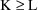
. Consider the example where (total) clearance is the lst PK
parameter and is given by (18), and
should be placed in GG(M,1+K,1+L). The matrix of
second-partial derivatives is symmetric, so it is only
necessary to store second-partial derivatives for values
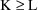
. Consider the example where (total) clearance is the lst PK
parameter and is given by (18), and
 and
and
 are the 4th and 5th
are the 4th and 5th
 variables, respectively. Then one needs code like
variables, respectively. Then one needs code like
IF (ICALL.EQ.1) THEN ... CALL GETETA (ETA) ... RETURN
ENDIF
...
CALL GETETA (ETA)
...
GG(1,1,1) = TVCLMT*EXP(ETA(4))+TVCLRN*EXP(ETA(5)) GG(1,5,1)
= TVCLMT*EXP(ETA(4)) GG(1,6,1) = TVCLRN*EXP(ETA(5))
GG(1,5,5) = GG(1,5,1) GG(1,6,6) = GG(1,6,1)
All values GG(1,1+K,1+L), , should be 0. However, since whenever PK is called, the GG array is initialized to zero immediately before the call, the user need not explicitly store zeros in elements of GG.
In the above example, there are only two nonzero second-partial derivatives of clearance that must be explictly stored in GG. However, even these two are not actually needed with every call to PK. (Certainly, they are never needed unless the Laplacian method is being used.) In order to save computation time, information is provided in the NONMEM global variable MSEC as to whether second-partial derivatives are needed with a particular call to PK. This is particularly useful when there are nonzero second-partial derivatives of a number of PK parameters, and the total number of such derivatives is large. MSEC is set by NONMEM to the value 1 or 0, according as the second-derivatives are needed or not. Consequently, an alternative code to the above might be:
USE NMPRD_REAL,ONLY: ETA ...
IF (ICALL.EQ.1) THEN
...
CALL GETETA (ETA)
...
RETURN
ENDIF
...
CALL GETETA (ETA)
...
GG(1,1,1) = TVCLMT*EXP(ETA(4))+TVCLRN*EXP(ETA(5)) GG(1,5,1)
= TVCLMT*EXP(ETA(4)) GG(1,6,1) = TVCLRN*EXP(ETA(5))
...
IF (MSEC.EQ.1) THEN
GG(1,5,5) = GG(1,5,1)
GG(1,6,6) = GG(1,6,1)
...
ENDIF
where all second-partials are computed and stored only when MSEC equals 1.
By storing a 1 in GG(M,1,1) at
ICALL=1, the user specifies that when ICALL=2 or 4, the
subject-specific value of the logarithm of the Mth PK
parameter will be placed in GG(M,1,1) (see section C). This
signal also means that the subject-specific first derivative
of the logarithm of the Mth PK parameter with respect to
 will be placed in GG(M,1+K,1) and that the subject-specific
second-partial derivative of the logarithm of the Mth PK
parameter with respect to
will be placed in GG(M,1+K,1) and that the subject-specific
second-partial derivative of the logarithm of the Mth PK
parameter with respect to
 and
will be placed in GG(M,1+K,1+L).
and
will be placed in GG(M,1+K,1+L).
During a given call to PRED,
NONMEM may not need drivatives for all
 ’s. A PK, TRANS, or ERROR routine may compute
derivatives for all
’s. A PK, TRANS, or ERROR routine may compute
derivatives for all
 ’s or optionally, to reduce run time, only for active
’s or optionally, to reduce run time, only for active
 ’s. NONMEM tells PRED how many etas are active
(NACTIV) and a mapping such that M(k) is the index of the
kth active eta. The declarations are:
’s. NONMEM tells PRED how many etas are active
(NACTIV) and a mapping such that M(k) is the index of the
kth active eta. The declarations are:
USE PROCM_INT, ONLY:
NACTIV,M=>IDXETA
PREDPP Library routines TRANS2, TRANS3, etc., use this feature, but without the alias M for IDXETA. This is a matter of style.
As mentioned in section C., with
every translator routine, TRANS, there is associated a
different list of PK parameters. These parameters are called
the basic PK parameters. They form a "minimal
set" of PK parameters whose typical/subject-specific
values and
 -derivatives must be set in PK (see sections C and E). There
are additional PK parameters whose use in a given
problem are somewhat optional. In this section we describe
them and give some examples for modeling them. As with the
basic parameters, their typical/subject-specific values and
-derivatives must be set in PK (see sections C and E). There
are additional PK parameters whose use in a given
problem are somewhat optional. In this section we describe
them and give some examples for modeling them. As with the
basic parameters, their typical/subject-specific values and
 -derivatives are communicated to PREDPP in PK. The way to do
this is described in section G.
-derivatives are communicated to PREDPP in PK. The way to do
this is described in section G.
Associated with each observation is an observation compartment
This compartment is specified either explicitly in the event record containing the observation (section V.H), or by a default designation (see sections VI.B and VII.C). For each observation, NONMEM computes a prediction. The amount A in the observation compartment at the time of observation, divided by the value of a parameter S, is used as the prediction. The parameter S is called a scaling parameter
There is one such parameter associated with every compartment of the structural model (including the output compartment). In NM-TRAN abbreviated code, the scaling parameters have reserved names Sn or SC (where n is the compartment) or SC (for the central compartment).
Suppose the observation is a
plasma concentration. Then the observation compartment
should be taken to be the plasma compartment, and the S of
that compartment should be taken to be the volume of
distribution of that compartment. (Volume of distribution
may or may not also be a basic PK parameter.) Suppose the
observation is a urine concentration. Then the observation
compartment should be taken to be the urine compartment,
which in turn might be identified with the output
compartment, and the S of that compartment should be taken
to be the measured volume of urine. Whereas, as in earlier
sections, volume of distribution is usually modeled in terms
of
 ’s,
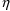
’s and x, urine volume is usually a measured quantity
and therefore simply some element of x. However, in
principle each scaling parameter (or any of the PK
parameters being described in section F) can be modeled in
terms of
’s,
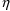
’s and x, urine volume is usually a measured quantity
and therefore simply some element of x. However, in
principle each scaling parameter (or any of the PK
parameters being described in section F) can be modeled in
terms of
 ’s,
’s,
 ’s, and x.
’s, and x.
Scaling parameters are optional in the sense that scaling parameters associated with compartments never observed may be ignored. The values of scaling parameters that are not computed in PK are always understood to be 1 (see section G). Therefore, if, an amount, rather than a concentration, is measured, the computation of the scaling parameter may be ignored in this case also. If a scaling parameter is not ignored and is computed in PK to be nonpositive, PREDPP exits with a nonzero PRED error return code (see section K).
The scaling parameter for a given compartment acts discretely at times for which predictions of the scaled amount in this compartment are computed (see section B.2). If volume of distribution is a basic PK parameter, it acts continuously in that capacity. However, when, for example, the scaling parameter for the plasma compartment is set equal to the volume of distribution, the volume parameter acts discretely as it acts through the scaling parameter.
Every dose is associated with a dose compartment
as specified either explicitly in the dose event record (see section V.H), or by a default designation (see sections VI.B and VII.C). This compartment is usually the compartment where the dose is physically input, although it need not be (see section F.3). If the dose is a bolus dose or a regular infusion, the dose amount must also be specified on the dose event record. If the amount is A, an amount of drug actually appears in the dose compartment (either instantaneously at the time the dose enters the compartment - with a bolus dose, or over a period of time - with an infusion), where F is the value of the bioavailability fraction
There is one bioavailability fraction (parameter) associated with every possible dose compartment of the structural model (the output compartment is not a possible dose compartment). In NM-TRAN abbreviated code, the bioavailability fractions have reserved names Fn, where n is the compartment number. The bioavailability fraction for a given compartment acts discretely at the times doses enter (or start to enter) the system (see section B.2). For lagged doses, these are lagged times; see section F.6. Bioavailability fractions are optional in the sense that bioavailability fractions associated with compartments never used as dose compartments may be ignored. The values of bioavailability fractions that are not computed in PK are always understood to be 1 (see section G). Therefore, if, bioavailability cannot be estimated, the computation of the bioavailability fraction can be ignored in this case too, with the consequence that it is assumed that the drug is 100% available. If a bioavailability fraction is not ignored and is computed in PK to be negative, PREDPP exits with a nonzero PRED error return code (see section K).
If two different preparations are given into the same dose compartment, and the concomitant Z assumes the value 1 or 2 according to which preparation is being given with some particular dose, then a model for F might be

With this model the typical
value of F is
 or
or
 according to the preparation given. [The variable
ranges from 0 to 1 and has typical value
; so if
according to the preparation given. [The variable
ranges from 0 to 1 and has typical value
; so if
 and
and
 are between 0 and 1, F is also.] On the other hand, the CV
of (random) interindividual variability in F is
approximately the same for both preparations (viz.
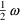
). Under this model, if both preparations are given to some
individuals, the bioavailabilities of the two preparations
are perfectly correlated across these individuals (because
with each such individual
are between 0 and 1, F is also.] On the other hand, the CV
of (random) interindividual variability in F is
approximately the same for both preparations (viz.
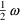
). Under this model, if both preparations are given to some
individuals, the bioavailabilities of the two preparations
are perfectly correlated across these individuals (because
with each such individual
 is the same between preparations). With another model,
is the same between preparations). With another model,
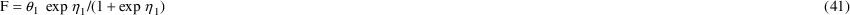

the correlation depends on the
degree to which
 and
are correlated, which may be 0. The correlation between
and
are correlated, which may be 0. The correlation between
 and
and
 can be estimated (provided the data allow this); see Guide
I. With model (41) the CV of interindividual variability may
differ between preparations (
and
).
can be estimated (provided the data allow this); see Guide
I. With model (41) the CV of interindividual variability may
differ between preparations (
and
).
There are two types of bolus
doses that may be given. An instantaneous bolus dose
of amount A is such that at the time the dose enters the
system, the amount
 of drug appears instantaneously in the dose compartment,
where F is the value of the bioavailability fraction
associated with the dose compartment. A zero-order bolus
dose of amount A is such that its appearance in the dose
compartment is described by a zero-order process over a
finite time interval, such that the total amount appearing
over this interval of time is
of drug appears instantaneously in the dose compartment,
where F is the value of the bioavailability fraction
associated with the dose compartment. A zero-order bolus
dose of amount A is such that its appearance in the dose
compartment is described by a zero-order process over a
finite time interval, such that the total amount appearing
over this interval of time is
 , where F is the value of the bioavailability fraction
associated with the dose compartment. The appearance of drug
in a depot compartment, resulting from the dissolution of a
preparation placed therein, is an example of drug appearance
that may be modeled by a zero-order process. The appearance
of drug in the central compartment, resulting from
absorption of a preparation placed in a depot compartment,
is another example of drug appearance that may be modeled by
a zero-order process, although this is often modeled by a
first-order process. In this example, the dose compartment
would need to be the central compartment, even though the
dose was physically input into a depot. A zero-order bolus
dose, just as an instantaneous bolus dose, may have a lag
time, in which case the zero-order process starts at the
lagged time; see section F.6.
, where F is the value of the bioavailability fraction
associated with the dose compartment. The appearance of drug
in a depot compartment, resulting from the dissolution of a
preparation placed therein, is an example of drug appearance
that may be modeled by a zero-order process. The appearance
of drug in the central compartment, resulting from
absorption of a preparation placed in a depot compartment,
is another example of drug appearance that may be modeled by
a zero-order process, although this is often modeled by a
first-order process. In this example, the dose compartment
would need to be the central compartment, even though the
dose was physically input into a depot. A zero-order bolus
dose, just as an instantaneous bolus dose, may have a lag
time, in which case the zero-order process starts at the
lagged time; see section F.6.
The difference between a regular infusion and a zero-order bolus dose is that the duration of a regular infusion is specified by information in the dose event record and computed by PREDPP itself, whereas the duration of a zero-order bolus dose is regarded as a parameter which may be modeled and computed by the PK routine. Of course, a model for the duration can be as simple as setting this parameter to some data item in the dose record that gives the duration of a regular infusion. Information in the dose record indicates that a dose is a zero-order bolus dose, rather than a regular bolus dose or an infusion; see sections V.E.
There is one duration parameter associated with every possible dose compartment of the structural model. In NM-TRAN abbreviated code, the duration parameters have reserved names Dn, where n is the compartment number. The duration parameter associated with a given compartment acts discretely at the times zero-order bolus doses start to enter the compartment (see section B.2). A zero-order bolus dose whose duration is modeled is called a duration- modeled zero-order bolus dose
Duration parameters are optional in the sense that duration parameters associated with compartments never receiving duration-modeled zero-order bolus doses may be ignored. The values of duration parameters that are not computed in PK are always understood to be 0 (see section G). If a duration parameter is not ignored and is computed in PK to be nonpositive, PREDPP exits with a nonzero PRED error return code (see section K).
Alternatively, the rate of a zero-order bolus dose may be modeled and computed by the PK routine; see next section. Some zero-order bolus doses may be duration-modeled, and others may be rate-modeled.
The zero-order rate of a zero-order bolus dose (see section F.3) may be modeled, instead of its duration. Information in the dose record indicates which is modeled, the duration or the rate; see section V.E. A zero-order bolus dose whose rate is modeled is called a rate-modeled zero-order bolus dose
There is one rate parameter associated with every possible dose compartment of the structural model. In NM-TRAN abbreviated code, the rate parameters have reserved names Rn, where n is the compartment number. These rate parameters are optional in the sense that rate parameters associated with compartments never receiving rate-modeled zero-order bolus doses (or rate-modeled steady-state infusions; see next section) may be ignored. The values of rate parameters that are not computed in PK are always understood to be 1 (see section G). If a rate parameter is not ignored and is computed in PK to be nonpositive, PREDPP exits with a nonzero PRED error return code (see section K).
Rate parameters act
continuously. Therefore, PREDPP obtains the value of a rate
parameter, holding over the state-interval
 , from a call to PK with the argument record associated with
, from a call to PK with the argument record associated with
 , even if the dose event time occurs before
, even if the dose event time occurs before
 . Therefore, if there are state times (e.g.
. Therefore, if there are state times (e.g.
 ) falling within the time interval over which a zero-order
bolus dose appears in the system, there exists the
possibility that the rate of drug input can change during
the interval. For this to occur, the rate parameter would
need to be modeled in terms of time varying concomitant
values. As a result, a better description of the zero-order
process where the rate is modeled might be a piecewise
zero-order process. The release of drug from a sustained
release capsule, designed to occur at different rates at
different stages of release, might be modeled using a rate
parameter. This model could be very simple, depending only
on the manufacturer’s design parameters and not
necessarily on parameters whose values must be
estimated.
) falling within the time interval over which a zero-order
bolus dose appears in the system, there exists the
possibility that the rate of drug input can change during
the interval. For this to occur, the rate parameter would
need to be modeled in terms of time varying concomitant
values. As a result, a better description of the zero-order
process where the rate is modeled might be a piecewise
zero-order process. The release of drug from a sustained
release capsule, designed to occur at different rates at
different stages of release, might be modeled using a rate
parameter. This model could be very simple, depending only
on the manufacturer’s design parameters and not
necessarily on parameters whose values must be
estimated.
The duration of a rate-modeled
zero-order bolus dose entering a compartment may be regarded
as a derived parameter, i.e. as a parameter computed by
PREDPP from the primary additional parameters, in this case
from the bioavailability fraction and rate parameter for the
given compartment. This parameter, H, acts discretely at all
state times
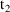
such that there is an amount
of drug remaining to be input into the compartment at the
state time
 preceding
preceding
 . At
. At
 its value is
, where F is the bioavailability fraction applied to the
dose at the time it started to enter the system, and r is
the value of the rate parameter at time
. If one wants H to be independent of F, r can be set to
, where
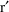
is a nominal rate. For example, if one wants H to be a given
value d (e.g. a regular infusion is given of known duration
d), then one should set
. If in fact the dose is a regular infusion, then A is the
amount
on the dose record, and PK can obtain this data item. In
this case, though, it is simpler to implement a model for
the duration parameter (of section F.3) than to implement
the model for the rate parameter. If A cannot be obtained as
a data item, then in general the value of H cannot be
controlled. One exception occurs when H is constant all the
while the dose enters the compartment. Then set
, where d is the constant value (so
).
its value is
, where F is the bioavailability fraction applied to the
dose at the time it started to enter the system, and r is
the value of the rate parameter at time
. If one wants H to be independent of F, r can be set to
, where
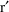
is a nominal rate. For example, if one wants H to be a given
value d (e.g. a regular infusion is given of known duration
d), then one should set
. If in fact the dose is a regular infusion, then A is the
amount
on the dose record, and PK can obtain this data item. In
this case, though, it is simpler to implement a model for
the duration parameter (of section F.3) than to implement
the model for the rate parameter. If A cannot be obtained as
a data item, then in general the value of H cannot be
controlled. One exception occurs when H is constant all the
while the dose enters the compartment. Then set
, where d is the constant value (so
).
Since two rate-modeled zero-order bolus doses into the same compartment share the same rate parameter, care should be taken that the intervals over which they appear in the system not overlap, or that if these do overlap, that the two possible values of the rate parameter be the same.
The rate of a (constant rate) steady-state infusion (see section V.F) may be modeled. Such an infusion is called a rate-modeled steady-state infusion
Information in the dose indicates that the infusion is rate-modeled; see section V.E. There is one rate parameter associated with every possible dose compartment of the structural model. The rate parameter that one uses for a given compartment is the same one used to determine the rate of zero-order bolus doses into the compartment. That is, rate-modeled steady-state infusions and zero-order bolus doses into the compartment share the same rate parameter. In NM-TRAN abbreviated code, the rate parameters have reserved names Rn, where n is the compartment number. Rate parameters are optional in the sense that rate parameters associated with compartments never receiving rate-modeled steady-state infusions or rate-modeled zero-order bolus doses may be ignored. The values of rate parameters that are not computed in PK are always understood to be 1 (see section G). If a rate parameter is not ignored and is computed in PK to be negative, PREDPP exits with a nonzero PRED error return code (see section K). Rate parameters may be 0. Steady-state doses with both amount and rate 0 are useful with general nonlinear models when the differential equations explicitly provide for endogenous drug production and there is no exogenous drug to be introduced.
Steady-state infusions are imagined as infusions which started long before time 0 and terminate at the event time on the dose event record. Rate parameters act continuously. In the case of a rate-modeled steady-state infusion terminating at time t, it should be imagined that the infusion rate is constant over the infinite interval from to t and is obtained from a call to PK with the argument record associated with t. Since a rate-modeled zero-order bolus dose and a rate-modeled steady-state infusion into the same compartment share the same rate parameter, care should be taken when two such doses occur, that the infusion does not terminate during the interval over which the bolus dose appears in the system, or that if it does, that the two values of the rate parameter are the same, or that some appropriate strategy is used.
One possible use of a
rate-controlled steady-state infusion occurs when a patient
has been on chronic drug therapy before entering a study,
but one is uncertain about the dosing history. By modeling
this history with a rate-controlled steady-state infusion
(terminating at time 0) whose typical rate is, say,
 (but which depends also on an individual random effect),
then all compartments are initialized at the outset with
amounts commensurate with the assumed kinetics, but which
will depend on a simple (and presumably) estimable
parameter. For this model to make sense, one should be able
to regard the differences in the pre-study drug histories
between those patients whose histories are uncertain as
being random.
(but which depends also on an individual random effect),
then all compartments are initialized at the outset with
amounts commensurate with the assumed kinetics, but which
will depend on a simple (and presumably) estimable
parameter. For this model to make sense, one should be able
to regard the differences in the pre-study drug histories
between those patients whose histories are uncertain as
being random.
Another possible use is to model the kinetics of a drug which is also present endogenously. As above, a rate-modeled steady-state infusion can be used to initialize the compartments to endongenous amounts. A very large amount of the compound administered thereafter (but with time data item also equal to 0), as a rate-modeled zero-order bolus dose (see section F.4), can maintain the "endogenous steady-state".
The time t on a dose record refers to the recorded time the dose was administered. In the case of a regular infusion, t is the time the infusion was initiated. (In the case of a steady-state infusion, t is the time the infusion terminates, but absorption lag times do not apply to steady-state infusions.) An absorption lag time is an increment of time L such that the time that the dose is regarded (by PREDPP) as entering (or starting to enter) the system is t+L. An absorption lag time is sometimes simply called the lag time
The time t+L is called the lagged time
and a dose with a positive lag time is called a lagged dose
Absorption lag times act discretely at recorded dose times. That is, at such an event time t an absorption lag time L for the dose is computed by the PK routine. The lagged time t+L is not an event time; it is a nonevent dose time. If there actually is an event time coinciding with the lagged time, this is only coincidental. The bioavailability fraction and duration parameter act at the time t+L, when the dose actually enters (or starts to enter) the system. Normally, PK is called to compute these parameters with only the argument record associated with t+L. This record generally does not contain information that might be used in the computation. If PK requests calls at nonevent dose times (see section III.H), PK can compute these parameters using both the argument record associated with t+L and the the dose record describing the initiating dose.
When additional doses are specified on a dose event record (see section V.K), the absorption lag time acting at the time on the dose record applies to the dose and to all the additional doses. The lag time may exceed the (length of the) interdose interval. There is no restriction in PREDPP that absorption delay for a given dose event record must be completed before a new dose is entered in to the system. With a steady-state multiple dose (see section V.F) the absorption lag time applies not only to this dose, but also to all the preceding implied doses. With such a dose, the lag time should not exceed the interdose interval.
There is one absorption lag time (parameter) associated with every possible dose compartment of the structural model (the output compartment is not a possible dose compartment). In NM-TRAN abbreviated code, the absorption lag times have reserved names ALAGn, where n is the compartment number. Absorption lag times are optional in the sense that absorption lag times associated with compartments never used as dose compartments may be ignored. The values of absorption lag times that are not computed in PK are always understood to be 0 (see section G). If an absorption lag time parameter is not ignored and is computed in PK to be negative, PREDPP exits with a nonzero PRED error return code (see section K).
As with any PK parameter, a lag
time may be modeled in as complicated a way as is desired;
the model may include
 ’s. However, data can often be insufficient to allow a
lag time to be well-estimated, and even when a typical lag
time can be estimated well enough, one may not be able to
estimate the interindividual variance of the lag time. In
this case either set the variance set to zero, or do not use
an
’s. However, data can often be insufficient to allow a
lag time to be well-estimated, and even when a typical lag
time can be estimated well enough, one may not be able to
estimate the interindividual variance of the lag time. In
this case either set the variance set to zero, or do not use
an
 .
.
With any of the kinetic models a (peripheral) output compartment is always present. Associated with this compartment is a PK parameter, the output fraction
denoted here by
 . Of the entire amount,
, of drug introduced into the system by various dosage
patterns and then eliminated from the system during a
state-interval, a fraction of this amount,
, goes into this output compartment. The output compartment
may be turned on and off. While on, drug accumulates
therein, and when turned off, the amount therein is reset to
zero. So, for example, if the output compartment is regarded
as a urine compartment, and
is the ratio of renal to total clearance, the initiation and
termination of a urine collection can be simulated. In
NM-TRAN abbreviated code, the output fraction has reserved
name F0 or FO or Fm (where m is the compartment number of
the output compartment.)
. Of the entire amount,
, of drug introduced into the system by various dosage
patterns and then eliminated from the system during a
state-interval, a fraction of this amount,
, goes into this output compartment. The output compartment
may be turned on and off. While on, drug accumulates
therein, and when turned off, the amount therein is reset to
zero. So, for example, if the output compartment is regarded
as a urine compartment, and
is the ratio of renal to total clearance, the initiation and
termination of a urine collection can be simulated. In
NM-TRAN abbreviated code, the output fraction has reserved
name F0 or FO or Fm (where m is the compartment number of
the output compartment.)
If the output compartment is never turned on, the output fraction can be ignored. If the value of the output fraction is not computed in PK, it is always understood to be 1 (see section G). Consequently, if the output fraction is ignored, then the amount in the output compartment would eventually equal 100% of all drug input into the system, provided the system does not retain any drug indefinitely, drug administration finally ceases, and the output compartment is always on. If the output fraction is not ignored and is computed in PK to be less than 0 or greater than 1, PREDPP exits with a nonzero PRED error return code (see section K). The output fraction acts continuously.
The example mentioned above might, more specifically, be
where
 and Cl are given as in (17) and (18). Under this model, the
typical value of
and Cl are given as in (17) and (18). Under this model, the
typical value of
 is
is
and the subject-specific first-partial derivatives are
The use of
 depends on the assumption that the rate of change of drug
amount in the output compartment is linear in the other
compartment amounts. Other than this linearity restriction,
the system can be nonlinear.
depends on the assumption that the rate of change of drug
amount in the output compartment is linear in the other
compartment amounts. Other than this linearity restriction,
the system can be nonlinear.
In earlier sections it has been suggested that unexplained interindividual variablity in kinetic responses might be modeled in terms of random interindividual effects on familiar kinetic parameters. Alternatively, a population kinetic model can be entertained wherein at least some of the unexplained interindividual variability is attributable to what appears to be random differences between individuals’ biological clocks. A simple low-dimensional description of unexplained interindividual variability, albeit somewhat empirical, results when all such variability is attributed to this source and to random interindividual differences in scaling parameters.
According to this idea, time itself is scaled differently between individuals. However, since some time intervals, such as an infusion time, are always measured on an external clock (e.g. the nurse’s wrist-watch), time is scaled only where it multiplies a rate constant (of a linear model). The scaling parameter is an additional PK parameter X which is modeled in PK. This parameter is called the time scale parameter (or sometimes, the X parameter ). In NM-TRAN abbreviated code, the time scale parameter has reserved name XSCALE. There is a single time scale parameter that applies to all rate constants. The parameter acts continuously (and could therefore theoretically itself vary with time measured on an external clock). It can only be used with linear kinetic models. If it is not used, it can be ignored. If the value of the time scale parameter is not computed in PK, it is always understood to be 1 (see section G). If it is not ignored and is computed in PK to be nonpositive, PREDPP exits with a nonzero PRED error return code (see section K).
Random interindividual effects can be assumed to affect the time scale parameter and the scaling parameters (see section F.1). If x denotes time, and S is a scaling parameter, then (ignoring random intraindividual variability) an observation y can be written schematically as
where A is drug amount as a function of time, and where, say,
Time x may be regarded as the abscissa value, the observation y may be regarded as the ordinate value, and then one sees that X scales the abscissa and S scales the ordinate. Random interindividual kinetic differences are being attributed at least in part to random interindividual differences in the abscissa and ordinate scales.
The X parameter does not scale the duration parameter D of a duration-modeled zero-order bolus dose. If this is desired, this must be done by setting , where is an unscaled duration parameter.
Model event times are additional PK parameters defined in the PK routine or $PK block. A model event time is not associated with any compartment, but, like an absorption lag time, defines a time to which the system is advanced. When the time is reached, PREDPP sets indicator variables and a call to PK is made. At this call (and/or subsequent to this call) PK or DES or AES or ERROR can use the indicator variables to change some aspect of the system, e.g., a term in a differential equation, or the rate of an infusion. This feature may be used with any ADVAN routine. If a model event time is also an event time, it is only coincidental. In NM-TRAN abbreviated code, the model event times have reserved names MTIME(i). Reserved variable MTDIFF may be set when MTIME variables are changed. Indicator variables have reserved names MNEXT(i) and MPAST(i), each corresponding to the MTIME(i) variable with the same index i. Reserved variable MNOW is also set by PREDPP when indicator variables are set. Details are in Appendix III.
The argument ICALL of PK was
described in section III.C. It functions similarly to the
ICALL argument described in Guide I, section C.4.2. It has
several possible values when PK is called. The value 1
signals to PK that the routine is being called for the first
time in the NONMEM problem. At such a time PK must store
certain values in array IDEF, telling PREDPP what, if any,
additional PK parameters the user has chosen to model, and
where their typical/subject-specific values and
 -derivatives will be stored in the GG array. Usually, a
model for at least one additional parameter, e.g. a scaling
parameter, is given in PK. IDEF is a two-dimensional
array†.
-derivatives will be stored in the GG array. Usually, a
model for at least one additional parameter, e.g. a scaling
parameter, is given in PK. IDEF is a two-dimensional
array†.
----------
† Previous editions
of this guide also described a one-dimensional format for
IDEF. This format is obsolete and the descripiton is
omitted.
----------
To see how the two-dimensional formatted IDEF is declared in PK, see section C.
The first row of IDEF is also used to inform PREDPP what tasks PK will perform at later calls, and this is described first.
IDEF(1,1)=-9 (required)
IDEF(1,2) is the PK calling protocol (call-limiting element)
(see Section H).
IDEF(1,3) describes whether PK
performs compartment initialization, i.e., whether or not PK
initializes elements of the initial state vector A_0(n) (See
section I.B). Values are:
-1: PK may initialize A_0.
0: PK does not initialize A_0.
1: PK does initialize A_0.
The default used by PREDPP is IDEF(1,3)=-1. However, when
compartment initialization is not implemented, then if
IDEF(1,3) is set to 0, PREDPP can avoid some time-consuming
processing. Indeed, when $PK abbreviated or verbatim code is
supplied, and there is no reference to compartment
initialization amounts A_0(n) in either the abbreviated or
verbatim code, then NM-TRAN sets IDEF(1,3)=0.
IDEF(1,4) describes whether PK
uses derivatives of compartment amounts (e.g. compartment
amounts themselves are used as random variables in
arithmetic statements in PK) (see Section I.A). Values are:
-1: PK may use derivatives of compartment amounts.
0: PK does not use derivatives of compartment amounts.
1: PK uses derivatives of compartment amounts.
The default used by PREDPP is IDEF(1,4)=-1. However, when
derivatives of compartment amounts are not used, then if
IDEF(1,4) is set to 0, PREDPP can avoid some time-consuming
processing. Indeed, when $PK abbreviated or verbatim code is
supplied, and there is no reference to A(n) (as a random
variable in an arithmetic statement) in the abbreviated code
(or to derivatives of A(n) in the verbatim code), then
NM-TRAN sets IDEF(1,4)=0.
Just as typical/subject-specific
values and
 -derivatives for each of the basic PK parameters are stored
in some row of the GG array, so are typical/subject-specific
values and
-derivatives for each of the basic PK parameters are stored
in some row of the GG array, so are typical/subject-specific
values and
 -derivatives for each of the additional PK parameters. The
rows can be assigned somewhat arbitrarily. If the output
fraction is modeled, set IDEF(2,1) to the number of the row,
called the row index
-derivatives for each of the additional PK parameters. The
rows can be assigned somewhat arbitrarily. If the output
fraction is modeled, set IDEF(2,1) to the number of the row,
called the row index
chosen for this fraction. If the time scale parameter is modeled, set IDEF(2,2) to the row index chosen for this parameter. If model event times (MTIME(i)) are modeled, set IDEF(2,3) to the row index of the lowest-numbered MTIME parameter. Set IDEF(2,4) to the row index of the hightest-numbered MTIME parameter. If the scaling parameter, bioavailability fraction, rate parameter, duration parameter, or absorption lag for the Ith compartment is modeled, set IDEF(3,I), IDEF(4,I), IDEF(5,I), IDEF(6,I), or IDEF(7,I), respectively, to the row index chosen for this parameter.
There is a number,
, that is the largest number of basic parameters permitted
with the selected kinetic model. This number is either set
in the selected ADVAN subroutine (see section VII.C) or set
by the user via the MODEL subroutine (see section VI.B). A
row index M assigned to an additional PK parameter must be a
number greater than
 , but no greater than PG, a constant in SIZES.f90 which is
given by PARAMETER (PG=50+PCT), where PCT is the maximum
number of model event time parameters given by PARAMETER
(PCT=30) Both these parameters can be changed with the
$SIZES record. Consider, for example, the one compartment
linear model, with one basic PK parameter: rate constant of
elimination. (This parameterization is implemented via
TRANS1.) From section VII.C.1 it may be seen that
. If the scaling parameter for compartment 1 is to be
modeled, then one can set IDEF(3,1)=3. If the scaling
parameter for compartment 2 is also to be modeled, then one
can set IDEF(3,2)=4. Lastly, if the bioavailability fraction
for compartment 2 is to be modeled, one can set
IDEF(4,2)=5
, but no greater than PG, a constant in SIZES.f90 which is
given by PARAMETER (PG=50+PCT), where PCT is the maximum
number of model event time parameters given by PARAMETER
(PCT=30) Both these parameters can be changed with the
$SIZES record. Consider, for example, the one compartment
linear model, with one basic PK parameter: rate constant of
elimination. (This parameterization is implemented via
TRANS1.) From section VII.C.1 it may be seen that
. If the scaling parameter for compartment 1 is to be
modeled, then one can set IDEF(3,1)=3. If the scaling
parameter for compartment 2 is also to be modeled, then one
can set IDEF(3,2)=4. Lastly, if the bioavailability fraction
for compartment 2 is to be modeled, one can set
IDEF(4,2)=5
The row indices of the additional PK parameters must be consecutive integers beginning with , with no integers skipped, as in the above example. However, one is not restricted to preserving an increasing monotonic relationship between the numbers of the compartments and their row indices, or between the numbers of the rows of IDEF itself and the row indices. So, in the above example one can just as well set IDEF(3,1)=4 and IDEF(3,2)=3, or set IDEF(3,1)=4, IDEF(3,2)=5, and IDEF(4,2)=3. Nor is one restricted from using a row index more than once. So, one can set IDEF(3,1)=IDEF(3,2)=3 (which specifies that the scaling parameters for compartments 1 and 2 are modeled and that their values are to be equal and stored in row 3 of GG), though usually there is no need to do this.
For each scaling parameter and
bioavailability fraction, and for the output fraction and
time scale parameter, PREDPP assumes that if its row index
is not explicitly set at ICALL=1, then its
typical/subject-specific value is always 1, and its
 -derivatives are always 0. Therefore, for example, the row
index of a bioavailability fraction associated with a plasma
compartment receiving only intravenous bolus doses
need not be explicitly set. (If this compartment were also a
dose compartment for zero-order bolus doses with possibly
less than 100% bioavailability, the row index would need to
be set. In this case one would need to be careful that the
fraction stored is less than 1 only when the fraction for
the zero-order bolus dose is being obtained with the call to
PK.) For each absorption time lag, PREDPP assumes that if
its row index is not explicitly set at ICALL=1, then its
typical/subject-specific value is always 0, and its
-derivatives are always 0. Therefore, for example, the row
index of a bioavailability fraction associated with a plasma
compartment receiving only intravenous bolus doses
need not be explicitly set. (If this compartment were also a
dose compartment for zero-order bolus doses with possibly
less than 100% bioavailability, the row index would need to
be set. In this case one would need to be careful that the
fraction stored is less than 1 only when the fraction for
the zero-order bolus dose is being obtained with the call to
PK.) For each absorption time lag, PREDPP assumes that if
its row index is not explicitly set at ICALL=1, then its
typical/subject-specific value is always 0, and its
 -derivatives are always 0. PREDPP assumes that if neither
the row index of the duration parameter nor the row index of
the rate parameter for a given compartment is explicitly set
at ICALL=1, then the compartment never receives zero-order
bolus doses.
-derivatives are always 0. PREDPP assumes that if neither
the row index of the duration parameter nor the row index of
the rate parameter for a given compartment is explicitly set
at ICALL=1, then the compartment never receives zero-order
bolus doses.
The user can specify that the
typical/subject-specific value and the
 -derivatives of the logarithm of an additional PK parameter
will be placed in GG, just as with the logarithm of a basic
PK parameter (see sections C and E).†
-derivatives of the logarithm of an additional PK parameter
will be placed in GG, just as with the logarithm of a basic
PK parameter (see sections C and E).†
----------
† The logarithms of
PK parameters cannot be modelled in this way with NM-TRAN.
----------
As the pharmacokinetic system is advanced, PK is called one or more times, each time with some argument record. The event records comprise these argument records, and are passed to PK in time order. The simulation and/or data analytic computations will normally be done correctly if routine PK is called with one event record after another (within an individual record), no event records being skipped, and no event record being repeated. This is the default. However, PREDPP can implement a few different protocols for calling PK. A protocol is specified by setting IDEF(1,2) to one of various values at ICALL=1 (for more about IDEF, see section G). For example, the PK routine can be called only with the first event record of the individual record and with every event record thereafter where the time data item differs from the time data item of the previous event record. If this more limited sequence of calls is desired, this can be accomplished by setting IDEF(1,2)=0. Note, though, that in this case, IDEF(1,2) must be explicitly set to 0 because 0 is not the default.
Often, none of the basic or additional PK parameters depend on concomitant variables whose values vary within an individual record, i.e. vary over time. In this situation the information output by PK, i.e. the GG array, is the same for each event record of an individual record (for fixed THETA and ETA). Considerable computation time can be saved; PREDPP need call PK only once per individual record, with the first event record only (for any given values of the THETA and ETA arrays). The values of continuously acting PK parameters computed with this call can be assumed to hold over all state-time intervals for the individual record, and the values of discretely acting PK parameters can be assumed to hold at each state time for the record. The user can request this calling-protocol by setting IDEF(1,2)=1. This is illustrated in examples below; see sections L.1 and L.2.
When the data are from a single subject, PREDPP treats all event records in the entire data set as though they are associated with the same subject. (This is a consequence of the single-subject assumption; see section IV.A.) In particular, suppose that every call to PK with a different event record results in the same output from PK (for fixed THETA). Then only one call is necessary, a call with the first event record in the entire data set. The values of continuously acting PK parameters computed at this call can be assumed to hold over all state-time intervals for the entire data set, and the values of discretely acting PK parameters can be assumed to hold at all state times for the entire data set. Setting IDEF(1,2) to 1 has this effect. This is illustrated in examples below; see sections L.3 and L.4.
Even when IDEF(1,2)=0 or 1, a call to PK with any given event record can be forced with the use of the CALL data item (see section V.J).
The protocol where PK is called once with every event record (see above) can be specified by setting IDEF(1,2) to -1, or by not setting IDEF(1,2) at all, i.e. this protocol is the default. If it is desired that, in addition, the values of PK parameters at any nonevent dose time t be computed with access to both the argument record associated with t and the event record describing the dose (see section B.2), set IDEF(1,2)=-2. This has the effect that PK may be called repeatedly with the same event record (for if t is a nonevent dose time, and s is the subsequent event time, PK is called with the event record for s at both times t and s). The primary use of this protocol is so that the values of certain discretely acting PK parameters, the bioavailability fractions and duration parameters, can always be computed with access to useful dose-related concomitant information contained in the dose record, such as the type of preparation, even when the dose is an additional or lagged dose. Another use of this protocol is to cause PREDPP to call PK at the time specified by a model event time parameter; this protocol is required with such parameters.
When NM-TRAN abbreviated code is used, the reserved variable CALLFL may be used to specify the value for IDEF(1,2). E.g., to set IDEF(1,2)=0, use:
CALLFL=0
Alternately, A calling protocol phrase can be used instead of the CALLFL pseudo-statement, e.g.,
$PK (NEW EVENT TIME)
In the next section the way PK has access to DOSREC, the record describing the dose, is explained.
PK can access variables other than though its argument list. With versions of NONMEM prior to NONMEM 7 FORTRAN COMMON blocks were used. With NONMEM 7, FORTRAN MODULES are used. The names of the COMMON’s and MODULE’s are not identical. Integer variables are in modules whose names ends with _INT. Real variables are in modules whose names ends with _REAL. Character variables are in modules whose names ends with _CHAR. The characters "RO" in a module name indicates "Read-Only", e.g., ROCM (NONMEM Read-Only) and PROCM (PREDPP Read-Only) and the variable should not be changed by PREDPP, i.e., should be used only on the right. Modules whose name starts with NMPR or NMPRD are for NONNEM-PRED communication. Variables may be used on the right or sometimes on the left. Variables in ROCM and NMPR and NMPRD modules are of interest to any PRED. Modules whose name starts with PR are for communication between PREDPP and its subroutines. This section lists some of the variables of interest for PREDPP. The module name immediately follows the USE clause. Variable name(s) are bold and follow the ONLY clause. Some variables listed below may be pointers to differently named variables in MODULES. Sometimes the aliasing feature "=>" is used so that a variable has a different name in the subroutine than in the module. The help Guide VIII can be used to obtain the exact declarations and all variables of interest.
|
USE NMPRD_INT , ONLY : MSEC=>ISECDER , IFIRSTEM |
These variables are discussed in Sections E.3 and E.4, respectively.
|
USE PROCM_INT , ONLY : NEWIND=>PNEWIF |
NEWIND is an integer variable acting like the NEWIND variable described in Guide I. NEWIND is an argument to PRED subroutines, but is communicated in a module to subroutines of PREDPP. It assumes one of 3 values: 0 if the event record is the first of the entire data set, 1 if the event record is the first event record of an individual record (other than the first individual record), and 2 if the event record is other than the first event record of an individual record. When the data are single-subject data, individual records are as described in chapter II.
|
USE PROCM_REAL , ONLY : DOSTIM , DDOST , D2DOST |
When IDEF(1,2)=-2, two kinds of calls to PK may occur: at nonevent dose times (with additional and lagged doses) and at model event times (with model event time parameters). Nonevent dose times are discussed first.
The values of PK parameters at any nonevent dose time t are obtained with access to both the argument record associated with t and the event record describing the dose (see sections B.2 and H). At the call to PK, when the values of the PK parameters are obtained, the value of t itself can be found in DOSTIM. The event time when the dose is given is found in another module (DOSREC; see below).
The time t may
depend on
 ’s. The first-partial derivatives and the
second-partial derivatives of t with respect to the
’s. The first-partial derivatives and the
second-partial derivatives of t with respect to the
 ’s are given in DDOST and D2DOST, respectively.
DDOST(K) =
, and DDOST(L,K) =
for
. When PK is called at an event time, DOSTIM, DDOST and
D2DOST contains 0’s.
’s are given in DDOST and D2DOST, respectively.
DDOST(K) =
, and DDOST(L,K) =
for
. When PK is called at an event time, DOSTIM, DDOST and
D2DOST contains 0’s.
|
USE PROCM_REAL , ONLY : DOSREC |
When IDEF(1,2)=-2, the values of discretely acting PK parameters at any nonevent dose time t are obtained with access to both the argument record associated with t and the event record describing the dose (see sections B.2 and H). At the call to PK, when the values of the PK parameters are obtained, the (last data record of the) event record describing the dose can be found in DOSREC. (The event record can span several data records; see chapter II.) This record differs from the argument record (the event record found in the argument EVTREC), which is the event record at the next event time following t. The argument record may not even be a dose record, but if it is, it may describe a dose unlike the one entering at time t.
When PK is called at an event time, DOSREC contains 0’s.
When NM-TRAN abbreviated code is used, labels of data items defined in the $INPUT record (user defined variables) may be used on the right in the $PK block. By default, the values used for these variables will be from the argument record EVTREC, the "next" record. The $BIND record may be used to request that values be from from the dose record. Values from the "last" (the most recent, i.e., the previous) event record be also be requested. Note that $BIND affects only the generated code, not PREDPP or the arrays DOSREC or EVTREC themselves.
|
USE NMPRD_REAL , ONLY : ETA |
The ETA array is in a global module. This allows elements of ETA to be displayed by NONMEM in tables and scatterplots and allows both PK and ERROR to access the values of ETA.
|
USE NMPRD_INT , ONLY : NTHES_=>NWTHT , NETAS_=>NWETA , NEPSS_=>NWEPS |
The dimensions of THETA, OMEGA, SIGMA. Never less than 1.
|
USE NMPR_REAL , ONLY : OMEGA=>VARNF |
The current value of OMEGA. The current value of SIGMA is also located in this array as follows:
SIGMA(I,J)=OMEGA(NETAS_+I,NETAS_+J)
Other useful global variables follow.
|
USE PROCM_REAL , ONLY : A=>AMNT , DAETA , D2AETA |
|
|
USE PROCM_REAL , ONLY : TSTATE |
Global variable
A is the state vector of compartment amounts (See
Introduction to Version VI). Elements of A may be used on
the right in $PK and PK subroutines.
A(n) = the amount in compartment n.
DAETA(n,i) = the derivative of A(n) wrt eta(i).
D2AETA(n,i,j) = the second derivative of A(n) wrt eta(i),
eta(j)
(lower-triangular; j=1, ..., i)
TSTATE is the state time associated with A, i.e., the time t
at which A was computed. It may also be used on the right in
$PK and PK subroutines.
PK should tell PREDPP whether or not it uses compartment amounts. See Section G, IDEF(1,4).
|
REAL(KIND=DPSIZE) , POINTER :: DEN_ , CDEN_( : ) |
|
|
USE ROCM_REAL , ONLY : DEN_NP |
|
|
DEN_=>DEN_NP(1) |
|
|
CDEN_=>DEN_NP(2 : ) |
These values are computed by NONMEM when the Nonparametric step is performed and marginal cumulatives are requested. DEN_ is the nonparametric density. CDEN_(n) is the marginal cumulative value for the nth. eta. They may be used as right-hand quantities in PK and all PREDPP subroutines.
|
USE ROCM_INT , ONLY : MIXNUM=>MIXCALL , MIXEST=>IMIXEST |
These are NONMEM variables used with Mixture models (see section L.2). They may be used on the right in $PK abbreviated code or PK subroutines.
to the index of
the subpopulation for which variables are to be computed.
the index of the subpopulation estimated to be that from
which the individual’s data most probably arises.
by the $MIX block of abbreviated code. They may be used on
the right in PK.
|
USE PROCM_INT , ONLY : MNOW=>MTNOW , MPAST=>MTPAST , MNEXT=>MTNEXT |
When IDEF(1,2)=-2 and PK is called at at model event times, the values of discretely acting PK parameters at any nonevent dose time t are obtained with access to the argument record associated with t. DOSTIM and DOSREC are 0. PK has access to global variables MNEXT, MPAST, MNOW. These indicator variables can be used to modify some aspect of the system. Details are in Appendix III.
|
USE ROCM_INT , ONLY : NIREC=>NINDREC , NDREC=>NDATINDR |
|
USE NMPRD_INT , ONLY : NPROB , IPROB |
|
INTEGER(KIND=ISIZE) , POINTER :: S1NUM , S2NUM , S1NIT , S2NIT , S1IT , S2IT |
|
USE NMPRD_INT , ONLY : IDXSUP , NITR_SUP , NITSUP |
|
S1NUM=>IDXSUP(1) |
|
S2NUM=>IDXSUP(2) |
|
S1NIT=>NITR_SUP(1) |
|
S2NIT=>NITR_SUP(2) |
|
S1IT=>NITSUP(1) |
|
S2IT=>NITSUP(2) |
|
USE ROCM_INT , ONLY : NREP , IREP=>NCREP |
|
USE ROCM_INT , ONLY : LIREC=>NDATPASS |
|
USE ROCM_INT , ONLY : NINDR=>NINDOBS , INDR1=>IDXOBSF , INDR2=>IDXOBSL |
These are NONMEM "counter" variables. They may be used on the right in $PK or PK subroutines. For initialization/finalization, they may be used in $INFN or INFN subroutines. (see INFN in Chapter VI). Counters include (in the order above): record counters; problem iteration counters; super-problem iteration counters; simulation repetition counters; number of data records in the individual record; number of individual records in the data set containing an observation record, and the indices of the first and last such individual records.
See also Chapter IV section D.A for variables giving values of THETA, OMEGA, SIGMA at different NONMEM steps. Some of these may also be of interest to PK.
|
USE NMBAYES_REAL, ONLY: ADDL_ACTUAL,ADDL_TIMEDIFF,ADDL_TIME |
With NONMEM 7.5, an Empirical method of Achieving Steady State may be used. The actual additional doses used is recorded in a reserved variable called ADDL_ACTUAL, accessible from $PK, $ERROR, $DES, and $AES. If ADDL_ACTUAL remains 0 for all records, this means the maximal number of doses ABS(ADDL) was reached before steady state occurred. The adjusted times are recorded in reserved variable ADDL_TIME, and the time difference between TIME (which is not altered) and ADDL_TIME is recorded in reserved variable ADDL_TIMEDIFF. The time of integration T for the ODE’s, TSTATE, DOSTIM, MTIME() are in reference to ADDL_TIME, not TIME, and the user’s model should be aware of this adjustment. When outputting results to a table, the relevant times displayed should be ADDL_TIME, not TIME. A user defined variable defined in $PK or $ERROR may store the ADDL_TIME value, such as ADDLTIME=ADDL_TIME and then ADDLTIME can be outputted to the table. IF $PK is given limited calls (such as with CALLFL=1), then ADDLTIME should be defined in $ERROR. Similarly, if $ERROR is given limited calls (such as OBS ONLY or CALLFL=0), then ADDLTIME should be defined in $PK. In this way, the user-defined variable ADDLTIME is updated for each outputted record. There is no harm in defining ADDLTIME in both $PK and $ERROR.
|
USE PROCM_INT , ONLY : A_0FLG |
A_0FLG is used with the compartment initialization feature of PREDPP. A_0FLG is an input variable to PK. It may be used on the right in $PK and PK subroutines. When PREDPP sets A_0FLG to 1, the amounts in the various compartments may be set by PK. See A_0, below.
This section describes variables that may be set by PK which are not communcated via the arguments but which are located in modules.
|
USE PROCM_INT , ONLY : A_0FLG |
|
|
USE PRMOD_REAL , ONLY : A_0 , DA_0 , D2A_0 |
These variables are used with the compartment initialization feature of PREDPP. A_0FLG is an input variable to PK. It may be used on the right in $PK and PK subroutines. When PREDPP sets A_0FLG to 1, the amounts in the various compartments may be set by the PK routine.
A_0(n) = the
amount for compartment n
DA_0(n,i) = the derivative of A_0(n) wrt eta(i)
D2A_0(n,i,j) = the second derivative of A_0(n) wrt eta(i),
eta(j) (lower-triangular; j=1, ..., i)
PK must tell PREDPP whether or not it peforms compartment initialization. See Section G, IDEF(1,3).
|
USE PROCM_INT , ONLY : A_UFLG |
With NONMEM 7.5, a compartment update block is a block of abbreviated code that is very similar to a compartment initialization block.
In a compartment initialization block, PREDPP sets A_0FLG to 1 at a call to PK with all the compartments at their initial state so that values may be assigned to reserved variables A_0(n).
In the compartment update block, the user sets A_UFLG to 1 in PK to indicate to PREDPP that PK is going to update the compartments. The desired compartment values may be set in the array A_U(n). The user should use MTIME to designate a variable time position at which an abrupt change in compartment amounts occurs. One could input a dose as follows:
MTIME(1)=wtime MTDIFF=1 AZTEST=A_0FLG IF(TSTATE==MTIME(1).AND.AZTEST==0) A_UFLG=1 IF(A_UFLG==1) THEN A_U(1)=A(1)+wdose A_U(2)=A(2) A_U(3)=A(3) ENDIF
The A_UFLG event must be triggered with an IF(TSTATE==MTIME()) condition as indicated in the above example. Values may be assigned to reserved variables A_U(n). The value of the amount in the nth compartment (the nth element of the state vector) is set to the value assigned to A_U(n). Any A_U(x) not explicitly defined are set to 0. An un-assigned A_U(k) should retain its value, A_U(k)=A_U(k).
The code "IF(A_UFLG==1)...THEN...ENDIF" is optional, as NMTRAN will insert it if not present. A_0FLG must be 0 whenever A_UFLG is set to 1, as shown in the example above (..\examples_uflg.ctl).
The rules for compartment update blocks are similar to those for compartent initialization blocks.
PREDPP expects to find the A_U values in the A_0 arrays. NMTRAN converts A_U() in abbreviated code to A_0() during FSUBS code construction.
(See Guide Introduction_7, "Updating Amounts in Compartments at any Time: The A_UFLG Flag (NM75)"
|
USE NMPRD_INT , ONLY : ETASXI |
With NONMEM 7.3,
an alternative eta shrinkage evaluation using empirical
Bayes variances (EBVs, or conditional mean variances) are
now also reported. With NONMEM 7.4, reported shrinkage
includes ETAshrinkSD, ETAshrinkVR and similarly for EBV and
EPS. Reserved variable ETASXI(i) may be used in $PK
abbreviated code or PK subroutine to specify certain etas of
particular subjects to be included, or to specify certain
etas of certain subjects to be excluded, from the average
eta shrinkage assessment.
If ETASXI(i) is set to 2, ETA(i) is included.
If ETASXI(i) is set to 1, ETA(i) is excluded.
|
USE PRMOD_INT , ONLY : I_SS |
I_SS is used for
the Initial Steady State feature of PREDPP, with the general
non-linear models (ADVAN6, ADVAN8, ADVAN9, ADVAN13, ADVAN14,
ADVAN15, ADVAN16, ADVAN17, ADVAN18). Default: -1 (PK does
not request the I_SS feature).
Values 0, 1, 2 and 3 are permitted. Value 0 requests that no
steady state be computed. ISSMOD values 1, 2, and 3 requests
that PREDPP compute an initial steady state for the model
before the first event record of an individual record, or
after a reset event. The results are identical to those that
would be computed by a steady-state dose event record with
SS=I_SS and AMT=0 and RATE=0. If endogenous drug is
specified in the differential equations, non-zero initial
conditions will be computed. There is no difference between
values 1, 2 and 3 of I_SS unless the PK routine also uses
the compartment initialization feature A_0. The I_SS feature
behaves exactly like a steady state dose record in this
regard. Specifically,
With I_SS=1
("reset"), values of A_0 are ignored.
With I_SS=2 ("sum"), values of A_0 are added to
the SS values.
With I_SS=3 ("initial ests"), values of A_0 are
used as initial estimates when computing the SS values.
See also ISSMOD (MODEL subroutine ; Chapter VI section
B.A).
|
USE PKERR_REAL , ONLY : MTIME |
|
|
USE PRMOD_INT , ONLY : MTDIFF |
MTIME (model event time variables) are communicated to PREDPP as additional PK parameters in the GG array. However, they are communicated to subroutine ERROR as global variables in the PKERR_REAL module (note that eta derivatives of MTIME variables are not available to the ERROR subroutine.) MTDIFF is a global variable located in a module. If PK sets MTDIFF to a value other than 0, e.g., MTDIFF=1, then PREDPP will understand that with that call to PK, the values of one or more of the MTIME(i) have possibly been reset. Details are in Appendix III.
|
USE NMPR_INT , ONLY : RPTI=>NRPT_IN , RPTO=>NRPT_OUT , RPTON=>NRPT_ON |
|
USE NMPR_INT , ONLY : PRDFL=>IUSEPRD |
These NONMEM variables provide the information controlling the Repetition feature of NONMEM (See Introduction to Version VI). All variables are output from PREDPP except RPTI, which is set by NONMEM. However, they are listed together in module NMPR_INT and are described here together. RTPO, RPTON, PRDFL may be used on the left in $PK and PK subroutines, as well as ERROR and all other PREDPP subroutines. RPTI is set by NONMEM and may be used on the right.
RPTO is used to
mark a record as a repetition base or a repetition
initiator.
RPTON gives the number of times the repetition series
initiated by the data record is to be repeated.
RPTI is set by NONMEM when the record being passed to PRED
is being repeated.
PRDFL signals that the output from PRED with a passed record
is to be ignored by NONMEM.
|
USE PRLS01_REAL, ONLY: STOP_TIME |
|
|
USE PRLS01_INT, ONLY: ITASK_=>ITASK |
These reserved variables are used to avoid overshoot in ADVAN9, ADVAN13, ADVAN14, and ADVAN15. These LSODA based routines use an algorithm for integration that overshoots the integration interval during calls to DES, but still accurately evaluates at the end of the integration interval when all calculations are completed. However, you may wish to capture a maximal or minimal value during $DES, and the overshoot should be turned off for this purpose. This is readily done by setting ITASK_=4 in $PK or $ERROR. E.g.,
$PK ITASK_=4
ITASK_ may take values between 1 and 5.
You may also specify a STOP_TIME (Tcrit) past which it should not integrate, if it is different from the end of the normal integration interval:
IF(TIME==4.0) STOP_TIME=5.0
To set back to default (end of normal integration interval),
STOP_TIME=-1.0d+300
For other values of ITASK_ and a
discussion of these variables,
See INTRODUCTION TO NONMEM 7, "ITASK_ and STOP_TIME:
Avoiding overshoot in ADVAN9, ADVAN13, ADVAN14, and
ADVAN15"
|
USE PRINFN , ONLY : TLCOM=>ITV |
PRINFN is a global module for INFN-defined variables (See Chapter VI, Section A.C). It is meant to be used for communication with other other blocks of abbreviated code or with user-written codes. When NM-TRAN is used, there is a subroutine ASSOCPRINFN in FSUBS similar to ASSOCNMPRD4 (See Section J). This makes it convenient for PK and ERROR to use variables that are initialized or modified in INFN at ICALL values 0 or 1 or 3.
|
USE DECLAREVARIABLES |
DECLAREVARIABLES is an area of storage that is defined using the $ABBREVIATED DECLARE control record with NONMEM 7.3.
Declared variables are global, i.e., are defined in all blocks of abbreviated code. Examples are integer variables for use in DOWHILE loops, or double precision arrays. Declared variables are not used by NONMEM or PREDPP.
|
include nonmem_reserved_general |
There is a file nonmem_reserved_general in the util directory. This contains USE statement for a number of other NONMEM variables that may be useful for advanced users. Most of these are variables that are set by NONMEM and can be used in PREDPP (e.g., ITER_REPORT, Iteration number that is reported to output). Some are meant to be set by PREDPP and are used by NONMEM (e.g., MDVI1, MDVI2, MDVI3 which can be used to override the value of MDV=100 or MDV=101 under certain circumstances).
Other reserved variables may be computed in PK that are not in the argument list or in global modules.
MU_ variables
MU_ variables
are useful with NONMEM methods such as Bayesian methods. The
association of one or more THETA’s with ETA(n) should
be identified by a variable called MU_n. If MU_ variables
are defined in $PK abbreviated code or PK subroutine, they
must also be computed in a subroutine called MUMODEL2. This
subroutine should contain only the code that is needed to
compute the MU parameters (MU_1, MU_2, etc.). This
subroutine may be empty. If NM-TRAN abbreviated code is
used, MUMODEL2 is generated by NM-TRAN. As much as possible,
define the MU’s in the first few lines of $PK or the
PK routine. A description of the MUMODEL2 subroutine is
beyond the scope of this document.
See Chapter VII.
A value stored in a variable (or
array element) V in PK may be displayed in a table or
scatterplot. To accomplish this, module NMPRD4 must be
defined in PK, and V must be listed in NMPRD4.†
----------
†(When there is
more than one data record within an event record R2, the
value of V computed when PK is called with the preceding
event record R1 is displayed as part of the last data record
of R1, and as part of every data record but the last
in R2.) See the example in section L.2. This is not possible
when NM-TRAN is used.
----------
Module NMPRD4 also provides a convenient place to store values of variables to be shared between PK and other user routines, and it is used thusly when these routines are generated from NM-TRAN abbreviated code (see Guide IV). (INFN-defined and declared variables are also shared between user routines.)
The implementation of NMPRD4 is different in NONMEM 7 than in earier versions. In order to facilitate dynamic storage allocation, module NMPRD4 contains a single dynamically-allocated array VRBL. The declaration for NMPRD4 is:
MODULE NMPRD4 USE SIZES, ONLY: DPSIZE REAL(KIND=DPSIZE), ALLOCATABLE, TARGET :: VRBL(:)
END MODULE
where the allocated size is given in SIZES.f90 by PARAMETER (LNP4=4000) and LNP4 can be changed with the $SIZES record.
Within a user-supplied code, the declaration
|
USE NMPRD4 , ONLY : COM=>VRBL |
makes it possible to use the elements of COM as in previous versions of NONMEM. When NM-TRAN is used, the generated code is a little more complicated. FSUBS contains a subroutine ASSOCNMPRD4 containing statements such as
REAL(KIND=DPSIZE), DIMENSION (:),POINTER ::COM COM=>VRBL KA=>COM(00001);K=>COM(00002);CL=>COM(00003);SC=>COM(00004)
ASSOCNMPRD4 is called from PK, ERROR and other subroutines in FSUBS. This allows the generated code to use the user-supplied variables KA, K, etc., which may be helpful to a user who examines FSUBS. E.g.,
KA=THETA(001)+ETA(001)
is more similar to the abbreviated code than either of the following, which are equivalent:
VRBL(1)=THETA(001)+ETA(001) COM(1)=THETA(001)+ETA(001)
Other reserved variables may be used with NMPRD4.
COMRES
COMRES ("common reserve" is a reserved word in
abbreviated code and the $ABBREVIATED record that may be
used to gives instructions to NM-TRAN about NMPRD4. (It has
no sigificance to NONMEM.) It can be used to set aside an
initial portion of NMPRD4 as a "reserved" portion.
Reserved elements of NMPRD4 may be referred to as COM(i) in
abbreviated code, verbatim code, and $TABLE and $SCATTER
record.
|
USE NMPRD_INT , ONLY : COMACT |
COMACT is set by NONMEM. It may
be tested in user-written subroutines or abbreviated code to
determine when NONMEM is making a copying pass, i.e., when
the data records are being passed to PRED for the purpose of
computing values of variables which will be obtained (i.e.
copied) from NMPRD4 for tables and scatterplots. NONMEM only
makes a copying pass when PRED-defined items are listed in
$TABLE or $SCATTER records. The values used in tables and
scatterplots are those copied from NMPRD4 with the last
copying pass. Values of COMACT are:
COMACT=0: This is not a copying pass. COMACT=1: This is a
copying pass with final thetas and zero-valued etas.
COMACT=2: This is a copying pass with final thetas and
conditional estimates of etas. COMACT=3: This is a copying
pass with conditional (nonparametric) estimates of etas.
|
USE NMPRD_INT , ONLY : COMSAV |
COMSAV is set by PREDPP. With NM-TRAN, it can be specified as an option of the $ABBREVIATED record. It gives the size of the SAVE Region of NMPRD4. If a variable is stored in the SAVE region, then the value of the variable computed with a given data record during a copying pass will be found in NMPRD4 when the same record is passed during the next copying pass, i.e. it will have been saved from the previous copying pass. This is in contrast to the usual behaviour, where with a given data record, the value in NMPRD4 is the value computed with the previous data record.
PREDPP may exit with a nonzero PRED error return code. Then either the NONMEM run is immediately aborted or an error-recovery procedure is implemented. An error-recovery procedure entails continued calls to PRED, but with values of THETA or ETA different from those with previous calls which resulted in nonzero return codes. There are two error-recovery procedures: one with which different ETA values are tried, the ETA-recovery a second with which different THETA (and possibly ETA) values are tried, the THETA-recovery
Whenever it is possible to implement the ETA-recovery, this is done. If this procedure fails, or if it is not possible to implement the ETA-recovery, and the error return code is obtained during either the search in the Estimation Step or the search in the Initial Estimation Step, then a choice exists between an abort and implementation of the THETA-recovery. If the THETA-recovery fails, or if it is not actually possible to implement the THETA-recovery, the NONMEM run is aborted.
A PRED error return code can have values 0, 1, or 2. The value 0 means that the return is a normal return. The value 1 means that if the choice exists between an abort or implementation of the THETA-recovery, then this choice is to be made using control stream information. The value 2 means that if the choice exists between an abort or implementation of the THETA-recovery, then the abort should be chosen.
When an abort occurs, an error message will appear in the NONMEM output, in the intermediate output file (if such a file exists), and in the PRED Error file. When the THETA-recovery is implemented, an error message appears in the intermediate output file (if such a file exists), in the PRED Error file, and if recovery is not possible, in the NONMEM output. The error message is called a PRED error message
When the PRED error return code
is 1, and a choice exists between implementation of the
THETA-recovery and an abort, the THETA-recovery is
implemented if the value in field 11 (field 3) of the
ESTIMATION (THETA CONSTRAINT) record is 1 (or with NM-TRAN,
if the NOABORT option is used in the $ESTIMATION ($THETA)
record).†
----------
†Other possible
options are $THETA NOABORTFIRST, and $EST NOHABORT. These
are discussed in Guide VIII.
----------
If the value is 0 (or if the NOABORT option is not used), then the run is aborted. Often, the most appropriate response to an abort occuring during the Initial Estimate Step, or during the Estimation Step after the 0th iteration summary has been output, is to rerun the problem requesting that the THETA-recovery be implemented. Warning: If the implementation of the THETA-recovery is requested before an actual abort has occured, be sure to check the PRED Error file PRDERR for possibly useful diagnostic information that is otherwise available in NONMEM output when an abort occurs.
PREDPP may exit with a nonzero PRED error return code as a result of some computation undertaken in a PREDPP kernal or Library routine, or when PK returns an invalid value of a PK parameter. The nature of the problem will be described in the PRED error message if this message appears.
PK (as well as ERROR, DES, and AES) can can force an immediate return to NONMEM from PREDPP with a nonzero PRED error return code and accompanying user message. The contents of GG are ignored.
Global output variables IERPRD, NETEXT, ETEXT are used.
|
USE NMPRD_INT , ONLY : IERPRD , NETEXT |
|
|
USE NMPRD_CHAR , ONLY : ETEXT |
If a user message is returned,
it will appear as part of the PRED error message. The return
code is stored in IERPRD. Values are:
IERPRD=0: Normal return
IERPRD=1: PRED is unable to compute. NONMEM should attempt
recovery.
IERPRD=2: PRED is unable to compute. NONMEM should abort the
run.
The user message can be comprised of up to three character strings, each of length 132. The message is stored in a character string array ETEXT. NETEXT gives the number of lines of text stored by PK in ETEXT.
When NM-TRAN is used, the EXIT statement may be used in abbreviated code. For example, a statement such as the following may be present in $PK:
EXIT 1 2
This sets IERPRD=1 and
ETEXT(1)=’PK SUBROUTINE: USER ERROR CODE = 2’
followed by a return from PK.
|
USE NMPRD_INT , ONLY : IQUIT |
Another global output variable, IQUIT, is used within PREDPP so that any subroutine may initiate an error return to NONMEM. When NM-TRAN abbreviated code is used for $PK (or $ERROR), IQUIT is tested after a call to GETETA, SIMETA, or SIMEPS (See Chapter IV). A user-written code should contain similar code, e.g.
CALL GETETA(ETA) IF (IQUIT == 1) RETURN
One example of code for a PK routine involves the simple one compartment linear model. It is based on an analysis of phenobarbitol data (which may be found on a file of the NONMEM distribution medium; see Guide III). More detailed discussion of the data set is to be found in section V.L.1. Essentially, each of 59 neonates was given some loading dose of the drug, had a plasma drug level measured about 2 hours later, was given maintenance doses about every 12 hours thereafter, had possibly one trough level measured during maintenance dosing, and certainly one level measured some time after the last maintenance dose. Due to the long half-life of the drug, for the purposes of analysis all doses can be regarded as intravenous bolus doses. The weight and APGAR score of each individual are available as concomitant information. The APGAR score (1-10) is a measure of a neonate’s health at birth.
The one compartment linear model
is implemented by choosing subroutine ADVAN1 from the PREDPP
Library (see chapter I). The user chooses to parameterize
this model in Cl and Vd, so the routine TRANS2 is also
chosen from the Library (see section A). Cl is modeled as in
(14), with
 taken to be proportional to weight as in (2) (see section
D). Vd is also modeled as in (14), with
taken to be proportional to weight as in (2) (see section
D). Vd is also modeled as in (14), with
 taken to be proportional to weight as in (2); however the
proportionality constant is one of two possibly different
values depending on the APGAR score. If APGAR is 2 or less,
the proportionality constant is one value, and if APGAR is
greater than 2, the proportionality constant is possibly
another value.
taken to be proportional to weight as in (2); however the
proportionality constant is one of two possibly different
values depending on the APGAR score. If APGAR is 2 or less,
the proportionality constant is one value, and if APGAR is
greater than 2, the proportionality constant is possibly
another value.
A code for PK is given in Figure
1. (A corresponding NM-TRAN abbreviated code is shown in
Figure 17 as part of an NM-TRAN control stream.) It returns
typical values and typical first-partial derivatives. It can
be used with the first-order estimation method, but not with
conditional estimation methods or with posthoc estimation of
 ’s. Note that the row index of the scaling parameter
for the plasma (i.e. central) compartment is set at ICALL=1
to be 3 and that this parameter is identified with Vd. Also
note that since both weight and APGAR do not vary within an
individual over time, it is stipulated at ICALL=1 that at
ICALL=2, PK be called only once per individual record.
’s. Note that the row index of the scaling parameter
for the plasma (i.e. central) compartment is set at ICALL=1
to be 3 and that this parameter is identified with Vd. Also
note that since both weight and APGAR do not vary within an
individual over time, it is stipulated at ICALL=1 that at
ICALL=2, PK be called only once per individual record.
A second code for PK is given in
Figure 2. (A corresponding NM-TRAN abbreviated code is shown
in Figure 17a as part of an NM-TRAN control stream.)†
----------
†With previous
versions of this guide, Figure 17 was used. However, Figure
17 was not appropriate.
----------
Figure 17a differs from Figure 17 in several ways.
•The $INPUT
record includes an extra data item, APFL.
•The $PK block adds the seventh data item to the data
set by assigning values to APFL during simulation.
•The $PK block had limited the calls to once per
individual record by the statement CALLFL=1 This
has been removed so that PK is called with every event
record. This allows APFL to be appended to every data
record. Similarly, Figure 2 no longer contains
IDEF(1,2)=1
•The record
$SIML (1111)
is added to instruct NONMEM to implement the Simulation
Step.
•The first $SCATTER record shows how APFL can be used
to partition a scatterplot.
Figure 2 is shown to illustrate
the use of PK with the Simulation Step. Upon inspecting it,
one should imagine that drug levels are being simulated
under the same model as decribed above, and with the same
dosing and observation designs and same subject-specific
values for the covariables weight and APGAR score as pertain
to the real drug level data. One should further imagine that
these simulated data are then analyzed as described above.
The code at ICALL=2 is exactly like that of Figure 1. At
ICALL=4 values for the
 variables are obtained using the NONMEM utility SIMETA (see
Guide IV, section III.B.13), subject-specific values of the
PK parameters are computed under the given model, but
variables are obtained using the NONMEM utility SIMETA (see
Guide IV, section III.B.13), subject-specific values of the
PK parameters are computed under the given model, but
 -derivatives are not computed.
-derivatives are not computed.
It is, of course, possible to simulate data using one model for the PK parameters and to analyze these data using another by allowing the codes at ICALL=2 and ICALL=4 to implement different models. Structural kinetic differences between simulation and analysis models may be accommodated using an ADVAN implementing one of the general linear or nonlinear models (see chapter VI), or by simulating data in one NONMEM run with one model and analyzing them in another NONMEM run with another model.
One also sees in Figure 2 that the 7th data item of each data record is modified to be 1 or 2 according as the APGAR score is or is not, respectively, greater than 2. This indicator type data item might serve to partition scatterplots. Modification of input data items is called transgeneration. In general, data items (not required by NONMEM or PREDPP) can be modified ("transgenerated") at ICALL=4 (but not at ICALL=2; see also section VI.A). However when using PREDPP, only data items in the last data record of an event record can be modified; modifications of data items in data records other than the last data record are simply ignored.
A third code is given in Figure
3. It returns subject-specific values and subject-specific
first-partial derivatives (but is not meant to be used with
simulation). It can be used with conditional estimation
methods and with posthoc estimation of the
 ’s, in particular, but also with the first-Order
estimation method. (The NM-TRAN abbreviated code shown in
Figure 17 would work just as well for this third code as for
the first code. However, yet another NM-TRAN control stream
with this same abbreviated code, but explicitly requesting
the computation of posthoc estimates, is given in Figure
21.)
’s, in particular, but also with the first-Order
estimation method. (The NM-TRAN abbreviated code shown in
Figure 17 would work just as well for this third code as for
the first code. However, yet another NM-TRAN control stream
with this same abbreviated code, but explicitly requesting
the computation of posthoc estimates, is given in Figure
21.)
With this example, the data set
of example I is again used, and again, the kinetic model is
the one compartment linear model parameterized in Cl and Vd,
and Cl and Vd are modeled as in (14). However, weight is now
ignored, and
 and
are modeled as in (1), i.e. taken simply to be elements of
and
are modeled as in (1), i.e. taken simply to be elements of
 . With no further changes to example I, the fit is poor, as
seen in the scatterplot of CP (measured plasma
concentration) vs PRED in Figure 4. If we pretend that
weight has not even been recorded, there is little that can
done to substantially improve the fit by introducing
concomitant variables into the model; the APGAR score is not
a very important covariable. We can try to include a
correlation between the two
. With no further changes to example I, the fit is poor, as
seen in the scatterplot of CP (measured plasma
concentration) vs PRED in Figure 4. If we pretend that
weight has not even been recorded, there is little that can
done to substantially improve the fit by introducing
concomitant variables into the model; the APGAR score is not
a very important covariable. We can try to include a
correlation between the two
 -variables, and this reduces the minimum value of the
objective function about 15 points. (This is partially
explained by the fact that weight has a considerable effect
on both CL and Vd.) However, the scatterplot of CP vs PRED
in Figure 4 actually results from a run with which the
correlation is already included.
-variables, and this reduces the minimum value of the
objective function about 15 points. (This is partially
explained by the fact that weight has a considerable effect
on both CL and Vd.) However, the scatterplot of CP vs PRED
in Figure 4 actually results from a run with which the
correlation is already included.
There is, though, some reason to entertain the idea (see below) that the 59 neonates constitute a random sample from a population comprised of two subpopulations, one with one set of typical values of Cl and Vd, and a second with another set of typical values, even though nothing is recorded about a neonate that would indicate of which subpopulation he is a member. A mixture model, a model that explicitly assumes that some fraction p of the population has one set of typical values of CL and Vd, and that the remaining fraction 1-p has another set of typical values, describes such a population and may be fit to the data. Both sets of typical values and the mixing fraction p may be estimated. This example shows how to implement such a model.
If it were known that CL and Vd were both proportional to weight (and we might justifiably suppose this much is known) and that weight were bimodally distributed in the population, this would clearly justify the mixture model assumption. However, from the recorded weights there is no evidence that weight is bimodally distributed. There is evidence, though, that weight is very right-skewed, and the assumed mixture model can also describe a unimodel right-skewed distribution, bivariate in CL and Vd (although, other types of models can also describe the same kind of distribution). It is for this reason that such a model might be tried.
The fit with the mixture model does indeed result in such a distribution (see section V.L.2). The minimum value of the objective function is reduced by another 15 points. Also, it is interesting to see how retrospectively, weight can be related to a classification of the 59 neonates into two groups as suggested by the fitted mixture model.
The mixture model is given by:
For subpopulation 1:

For subpopulation 2:
The parameters
 and
and
 are the fractional differences in the typical values between
the two subpopulations. With a mixture model, different
are the fractional differences in the typical values between
the two subpopulations. With a mixture model, different
 variables on the same PK parameter must be used with
different subpopulations. Certainly, when the magnitude of
the dispersion of the parameter within a subpopulation
differs between subpopulations, it should be clear that
different
variables on the same PK parameter must be used with
different subpopulations. Certainly, when the magnitude of
the dispersion of the parameter within a subpopulation
differs between subpopulations, it should be clear that
different
 variables must be used, but this rule actually applies even
when the magnitudes are the same.
variables must be used, but this rule actually applies even
when the magnitudes are the same.
A code is given in Figure 5, returning subject-specific values and subject-specific first-partial derivatives. (A corresponding NM-TRAN abbreviated code is shown in Figure 23 as part of an NM-TRAN control stream. Note that, with this version of Guide VI, $PK abbreviated code uses an IF/THEN/ELSE structure similar to Figure 5 rather than an indicator variable Q to select the model. This is a matter of style.)
The integer variable MIXNUM, found in module ROCM_INT, has value 1 or 2 according to whether NONMEM requires PRED to compute outputs for the 1st or 2nd subpopulations, respectively. Accordingly, PK computes different outputs according to the value of MIXNUM. MIXNUM first assumes the value 1, and then PK is called with event records from an individual record. Then MIXNUM assumes the value 2, and PK is called with the event records from the same individual record. This process is carried out for each individual record, and, of course, for each individual record repeatedly as parameter values vary.
For each individual, NONMEM computes an estimate of the number of the subpopulation of which the individual is a member, and it stores this estimate in the integer variable MIXEST, also found in ROCM_INT. When PK is called with any event record from an individual’s record, the value of MIXEST is the estimate for the individual, although, this value is 1 for all calls to PK preceding the computation of the estimates. By the time the computations for the Table and Scatterplot Steps are performed, these estimates are actually available, and storing them in a variable EST, listed in module NMPRD4, during calls to PK while these steps are being implemented, enables the estimates to be displayed in tables and scatterplots. The control stream requesting the display is described in section V.L.2.
A code for the user-supplied routine MIX is given in Figure 6. (A corresponding NM-TRAN $MIX abbreviated code is shown in Figure 23 as part of an NM-TRAN control stream.) This routine is required when a mixture model is used. It is called with one individual record after another. Each time it is called the fractions p and 1-p are computed and stored in the array P. In this example p is simply THETA(5) (and is estimated, but constrained to be between 0 and 1; see section V.L.2). The number of subpopulations is stored in the variable NSPOP (in principle, this number, as well as the fractions associated with each subpopulation, can change from individual to individual). The current value of THETA is found in module ROCM_REAL, and if required, data items DATA from the observation records of the individual record can be found in ROCM_REAL, as shown in Figure 6.
Another example of code for a PK routine involves the one compartment linear model with first order absorption. It is based on the very same example used in Guide I, section C - the simple nonlinear regression example using theophylline data. Although PREDPP has been designed with population pharmacokinetic data analysis in mind (where there are data from a number of subjects), the user can also take advantage of the ability with PREDPP to facilitate pharmacokinetic computations when the data come from a single subject. The simple nonlinear regression example illustrates how to use PREDPP with such data. In this example a single bolus dose is given to the subject, and then plasma concentrations are observed. Therefore, this example, though typical of single-subject data, does not really illustrate the power of PREDPP. It is simple enough that a user-supplied PRED, such as the one given in Guide I, can be developed rather quickly by most users. Were multiple dosing involved, or a more complicated kinetic model used, the advantage in using PREDPP would be clearer.
The code for PK is given in
Figure 7. (A corresponding NM-TRAN abbreviated code is shown
in Figure 26 as part of an NM-TRAN control stream.) The
user-chosen parameters are the rate constants of elimination
and absorption. Since all the data are from a single
subject, random effects describing subject-to-subject
variability are unnecessary. So,
 type random variables do not appear in the model for the PK
parameters, and neither ETA variables nor
type random variables do not appear in the model for the PK
parameters, and neither ETA variables nor
 -derivatives are computed in the PK routine. The typical
values of the PK parameters are just the subject’s
values of these parameters. In principle these could be
modeled in terms of concomitant variables, e.g. the
elimination rate constant might be modeled in terms of
rapidly changing serum creatinine. However, in the data
situation at hand, only one dose is given, and no
concomitant variables other than dose and time are
available. So the subject’s PK parameters are simply
elements of
-derivatives are computed in the PK routine. The typical
values of the PK parameters are just the subject’s
values of these parameters. In principle these could be
modeled in terms of concomitant variables, e.g. the
elimination rate constant might be modeled in terms of
rapidly changing serum creatinine. However, in the data
situation at hand, only one dose is given, and no
concomitant variables other than dose and time are
available. So the subject’s PK parameters are simply
elements of
 , the correspondence being exactly the same as that given in
the example in Guide I, section C. Namely, the rate
constants of absorption and elimination are
, the correspondence being exactly the same as that given in
the example in Guide I, section C. Namely, the rate
constants of absorption and elimination are
 and
and
 , respectively. As in Example I (section L.1), the scaling
parameter of the plasma compartment is identified with Vd,
or
, respectively. As in Example I (section L.1), the scaling
parameter of the plasma compartment is identified with Vd,
or
 .
.
Since every call to PK with a different event record results in the same output from PK (for fixed THETA), only one call is necessary. Therefore, IDEF(1,2) is set to 1, thereby limiting calls to PK at ICALL=2 to one per data set; see section H.
When the data are from a single subject, and the run involves data simulation, where the simulation and analysis models for PK parameters are the same, PK code at ICALL=4 can be exactly the same as that at ICALL=2. In the example the code in Figure 3 would work just as well when simulation only is implemented, or when estimation only is implemented, or when both simulation and estimation are implemented. When the simulation and analysis models for PK parameters differ, then codes at ICALL=2 and ICALL=4 will simply differ. Structural kinetic differences between simulation and analysis models may be accommodated using an ADVAN implementing one of the general linear or nonlinear models (see chapter VI), or by simulating data in one NONMEM run with one model and analyzing them in another NONMEM run with another model.
This example is similar to Example III, except that a pharmacodynamic observation is recorded at each of ten times, and a simple Emax type model, with the drug concentration being that of an effect compartment, is used. The same kinetic model from Example III is used, with the addition of an effect compartment attached to the central compartment. The purpose of this section is to describe the implementation of these kinetics. The pharmacodynamic model itself, and its implementation, are described in section IV.G.4. In order to implement the kinetics an ADVAN implementing a general linear model is used (although the ADVAN implementing the two compartment linear mammillary model with first order absorption could also be used for these particular kinetics). It is assumed that the PD observations are obtained from the same subject from which the PK observations in Example III are obtained, and that the values of the PK parameters (except for the elimination rate constant from the effect compartment) are those estimates obtained in Example III.
A code for PK is given in Figure
8. (A corresponding NM-TRAN abbreviated code is shown in
Figure 30 as part of an NM-TRAN control stream.) As with
Example III, compartments 1 and 2 are the depot and central
compartments, respectively; compartment 3 is the effect
compartment. When using a general linear model, the
numbering of the compartments is specified in the
user-supplied MODEL routine (see section VI.B). A dummy
TRANS routine, TRANS1, that allows the rate constants to be
modeled in PK, is the only TRANS routine (from the PREDD
Library) that is available with a general linear model (see
next section). The elimination rate constant from the effect
compartment is to be estimated; it is identified with
 . The rate constant from the central compartment to the
effect compartment is set to 0.1% of the elimination rate
constant from the central compartment, so that the amount in
the central compartment is unaffected by the kinetics of the
effect compartment. Concentration in the effect compartment
is not observed, so the volume in this compartment is not
estimable. However, if the volume changes by a known scale
factor s, the
. The rate constant from the central compartment to the
effect compartment is set to 0.1% of the elimination rate
constant from the central compartment, so that the amount in
the central compartment is unaffected by the kinetics of the
effect compartment. Concentration in the effect compartment
is not observed, so the volume in this compartment is not
estimable. However, if the volume changes by a known scale
factor s, the
 parameter of the Emax model simply changes by
. Therefore, the volume is arbitrary and is often obtained,
as in this example, so to make the concentration the same as
central compartment concentration at steady-state. When
using a general linear model, the numbering of the rate
constants is specified in the user-supplied MODEL routine
(see section VI.B).
parameter of the Emax model simply changes by
. Therefore, the volume is arbitrary and is often obtained,
as in this example, so to make the concentration the same as
central compartment concentration at steady-state. When
using a general linear model, the numbering of the rate
constants is specified in the user-supplied MODEL routine
(see section VI.B).
Were the data from a population
of subjects, there would be interindividual variability in
various parameters of the model, in particular in the
kinetic parameters. The values of K12, K20, and VD could be
set to subject-specific estimates obtained from analyzing PK
data from each subject separately, as were the values of
these parameters for the subject of this example. The values
for a given subject could be included in his event records
and then would be available to PK in EVTREC. This would
account for the interindividual variability in these
parameters. The elimination rate constant from the effect
compartment could be modeled with an
 -variable, accounting for random individual variability in
this parameter. The same considerations regarding such
modeling, which have been discussed in previous sections of
this chapter and illustrated in sections L.1 and L.2, apply.
Alternatively, K12, K20, and VD could themselves be modeled
with
-variables. Then there are two possibilities. The
-variable, accounting for random individual variability in
this parameter. The same considerations regarding such
modeling, which have been discussed in previous sections of
this chapter and illustrated in sections L.1 and L.2, apply.
Alternatively, K12, K20, and VD could themselves be modeled
with
-variables. Then there are two possibilities. The
 ’s and
’s and
 elements that are a part of the model for these parameters
could be set to estimates obtained from analyzing PK data.
Alternatively, they, along with the population parameters
which are a part of the pharmacodynamic model, could be
estimated by fitting both PK data and PD data
simultaneously.
elements that are a part of the model for these parameters
could be set to estimates obtained from analyzing PK data.
Alternatively, they, along with the population parameters
which are a part of the pharmacodynamic model, could be
estimated by fitting both PK data and PD data
simultaneously.
To compute the kinetic equations for a kinetic model, PREDPP - but more precisely, the chosen ADVAN - uses an internal set of parameters. These parameters may be modeled in PK, but a different set, one preferred by the user, can be modeled there instead. The TRANS subroutine translates (or transforms) the values for a set of basic PK parameters modeled in PK to a set of values for the internal parameters. The PREDPP Library has a number of TRANS subroutines, representing different possible parameterizations, from which the user may choose (see chapter VII). If a suitable translator is not found in the Library, the user may write his own. The form of such a subroutine is described in this section.
For a linear kinetic model, the internal parameters are the microconstants, i.e. rate constants, of the model. For a linear model, other than a general linear model, these parameters are numbered in the same way as the microconstants with TRANS1 from the PREDPP Library (see section VII.C). If the model is a general linear kinetic model, the MODEL subroutine specifies a numbering of these parameters (see section VI.B). For the simple Michaelis-Menton elimination model (see section VII.C.10), the two internal parameters are the same as the first two basic parameters listed for TRANS1, and are numbered the same. The kinetic equations for a general nonlinear kinetic model PREDPP essentially consist of the differential-algebraic equations given by the user in the DES and AES routines to describe the model (see sections VI.C and VI.E). The parameters of these equations comprise the internal set of parameters; they are numbered according to the numbering used in the DES and AES routines.
The preface to TRANS can be
SUBROUTINE TRANS(ITRANS,IRGG,GG,NETAS) USE PRSIZES, ONLY: ISIZE,DPSIZE USE PRDIMS, ONLY: GTRD INTEGER(KIND=ISIZE):: ITRANS,IRGG,NETAS REAL(KIND=DPSIZE):: GG(IRGG,GTRD+1,GTRD+1)
For simplicity, the GG array is shown as two-dimensional in the discussion below. GTRD is equal to GPKD.
The argument ITRANS functions similarly to ICALL in PK. A value of 1 signals to TRANS that it is being called for the first time in the NONMEM problem. A value of 2 signals a regular data analytic call, and a value of 4 signals a regular data simulation call. At ITRANS=1, ITRANS must be reset by TRANS to a number in the range 1-8999. This number appears on NONMEM output, allowing the user to identify the TRANS routine being used. At ITRANS=2 and 4, TRANS must modify values in the GG array.
Suppose P denotes the vector of internal parameters. The user may choose to model instead a vector of parameters R. R may contain more elements than P. Let T be a transformation taking R onto P, i.e. the nth element of P is given by
for some function
 . E.g.
[ADVAN1];
[TRANS2]; and
. Then the typical value of the nth element of P is defined
by
. E.g.
[ADVAN1];
[TRANS2]; and
. Then the typical value of the nth element of P is defined
by
The first derivative of the nth
element of P with respect to
 is
is
The second-partial derivative of the nth element of P with respect to , is
So in terms of the example:
At ITRANS=2, on input the GG
array has stored in it the values computed by PK (except
that were any PK parameter modeled in its logarithm form in
PK, PREDPP would have already exponentiated its
typical/subject-specific value and multiplied its
 -derivatives by its exponentiated typical/subject-specific
value). On output the GG array should have stored in it the
values that would be computed by PK were the internal
parameters P modeled directly in PK (and none in their
logarithmic form). So the code for TRANS2, using the above
example, is essentially:
-derivatives by its exponentiated typical/subject-specific
value). On output the GG array should have stored in it the
values that would be computed by PK were the internal
parameters P modeled directly in PK (and none in their
logarithmic form). So the code for TRANS2, using the above
example, is essentially:
GG(1,1) = GG(1,1)/GG(2,1) IF (ITRANS.EQ.2) THEN DO 10 K = 1,NETAS
10 GG(1,1+K) =
GG(1,1+K)/GG(2,1)-GG(1,1)*GG(2,1+K)/GG(2,1)
ENDIF
if only first derivatives are needed, and is:
A(1) = GG(1,1,1)/GG(2,1,1)
IF (ITRANS.EQ.2) THEN
DO 10 K = 1,NETAS
A(1+K) = GG(1,1+K,1)/GG(2,1,1)
1 -GG(1,1,1)*GG(2,1+K,1)/GG(2,1,1)**2
DO 10 L = 1,K
10 GG(1,1+K,1+L) =
1 -(GG(2,1+K,1)*GG(1,1+L,1)+GG(1,1+K,1)*GG(2,1+L,1)
2 +GG(1,1,1)*GG(2,1+K,1+L))/GG(2,1,1)**2
3 +2*GG(1,1,1)*GG(2,1+K,1)*GG(2,1+L,1)/GG(2,1,1)**3
4 +GG(1,1+K,1+L)/GG(2,1,1)
DO 20 K = 1,NETAS
20 GG(1,1+K,1)=A(1+K)
ENDIF
GG(1,1,1)=A(1)
if first and second derivatives
are needed. Note that the total number of
 variables used in the problem is given in the last argument
of TRANS and can be used as illustrated here. Note also that
A is a work array, not the state vector.
variables used in the problem is given in the last argument
of TRANS and can be used as illustrated here. Note also that
A is a work array, not the state vector.
At ITRANS=4, on input the GG array has stored in its first column the values of the subject-specific PK parameters computed by PK (except that for each subject-specific PK parameter modeled in its logarithm form in PK, PREDPP has already exponentiated its value). On output the GG array should have stored in its first column the values that would be computed by PK were the internal parameters P modeled directly in PK (and none in their logarithmic form). Since, when ITRANS=4, only the first column of the GG array is relevant, computations involving other columns may be skipped, as in the above code.
TRANS has access to the entire
GG array, including the typical/subject-specific values and
 -derivatives of the additional PK parameters. It can
therefore perform a translation for all parameters,
including scaling parameters, bioavailability fractions,
etc., not just for the basic PK parameters. This type of
translation, however, is usually not needed.
-derivatives of the additional PK parameters. It can
therefore perform a translation for all parameters,
including scaling parameters, bioavailability fractions,
etc., not just for the basic PK parameters. This type of
translation, however, is usually not needed.
See Section E.5 above for a discussion of the Active Eta List feature, which may optionally be used in a TRANS routine to improve run time.
RANDOM
The NONMEM utility routine RANDOM may be called by PK during the Simulation Step (ICALL=4) and when data averages are being computed (ICALL=5) to obtain numbers from different random sources.
TOP
TABLE OF CONTENTS
NEXT CHAPTER ...